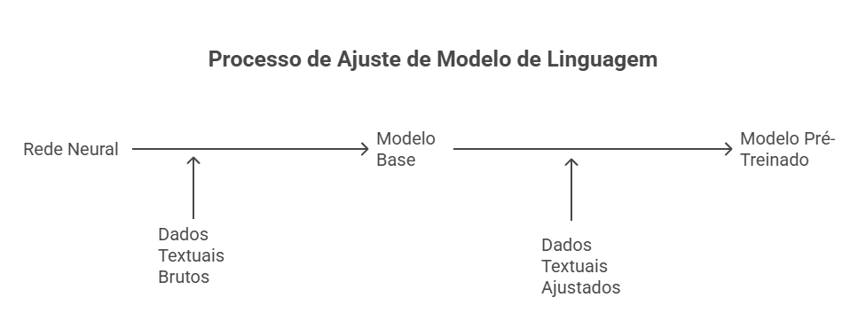
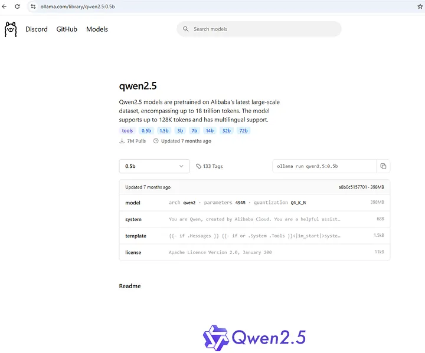
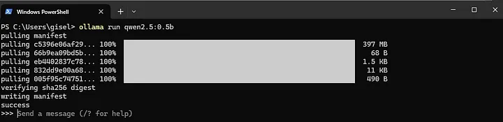
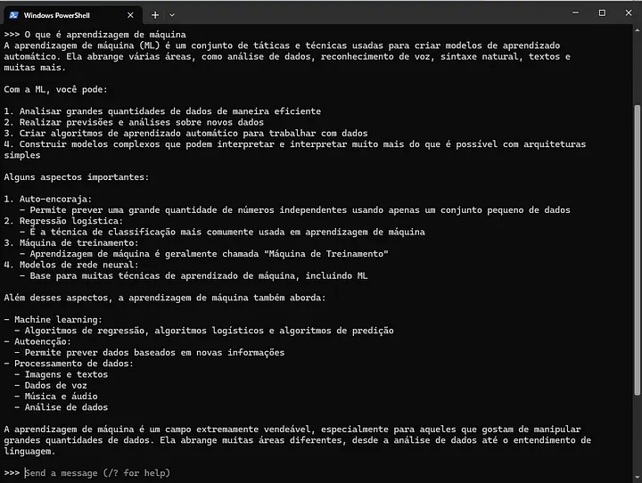
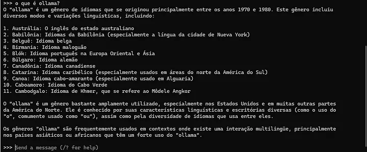
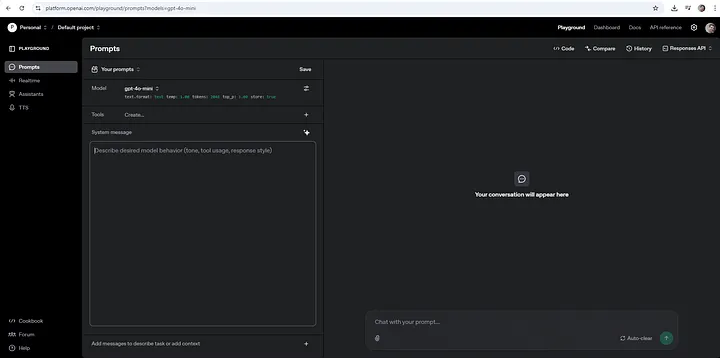
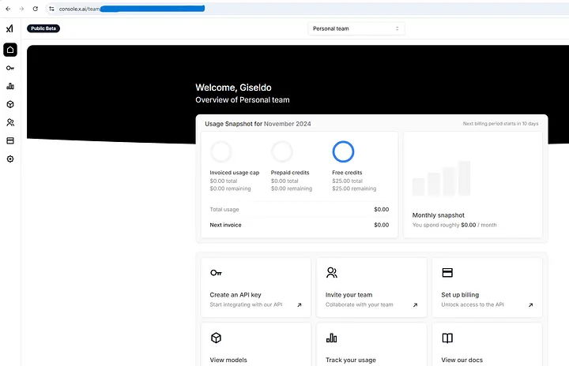

4 Modelos de Linguagem Grande (LLM)
“A inteligência desses sistemas é uma miragem — o que se vê não é compreensão, mas um ajuste estatístico de padrões.”
Emily Bender
Objetivo Discutir a arquitetura de Transformers, modelos como BERT, GPT e LLaMA, Fine-Tuning e RAG, mostrando como essas técnicas são aplicadas na construção de chatbots modernos.
4.1 Introdução
Um Large Language Model (LLM) - em inglês, Large Language Models - pode ser definido como um sistema computacional fundamentado em técnicas de aprendizado de máquina, cuja finalidade consiste em gerar texto a partir de uma sequência textual fornecida como entrada. Nesse contexto, o texto de entrada é denominado prompt, também referido em inglês como input, enquanto o texto produzido pelo modelo é denominado resposta, ou output. A figura a seguir apresenta uma representação esquemática do processo de entrada e saída de texto em um LLM.

Um LLM nada mais é do que um tipo específico de rede neural artificial (a rede neural profunda) treinada com dados textuais. Em outras palavras, uma grande rede neural treinada com muitos dados. O conceito de “grande rede neural” está relacionado à quantidade de parâmetros que compõem a rede, na casa de milhões em diante; já em relação a “muitos dados” refere-se a dezenas de gigabytes em diante, abrangendo conjuntos de dados brutos que podem incluir livros, artigos, páginas da web, documentos técnicos e outros materiais escritos.
O processo de treino envolve duas etapas (veja Figura 4): (i) um treinamento com dados textuais brutos e (ii) um treinamento com dados textuais anotados (ou seja, mais ajustados) às necessidades de um LLM (Raschka 2024).

Quando o LLM é treinado com dados brutos, ele é denominado modelo “base” e tem como objetivo prever a próxima sequência de palavras a partir do prompt de entrada. Por exemplo, para o prompt: O “livro está”, a resposta de um modelo base poderia ser: “O livro está em cima da mesa.”. A seguir, no Exemplo 1, apresenta-se um conjunto ilustrativo de dados textuais de treino.
Exemplo 1 - Dados textuais brutos para a primeira etapa do treino, omitindo alguns detalhes.
"Algum tempo hesitei se devia abrir estas memórias pelo princípio ou pelo fim, isto é, se poria em primeiro lugar o meu nascimento ou a minha morte. Suposto o uso vulgar seja começar pelo nascimento, duas considerações me levaram a adotar diferente método: a primeira é que eu não sou propriamente um autor defunto, mas um defunto autor, para quem a campa foi outro berço; a segunda é que o escrito ficaria assim mais galante e mais novo. Moisés, que também contou a sua morte, não a pôs no intróito, mas no cabo: diferença radical entre este livro e o Pentateuco."
Trecho de Assis, Machado. Todos os Romances: Machado de Assis (Portuguese Edition) (p. 226). Edição do Kindle.Na segunda etapa, o modelo base é treinado novamente, mas agora com dados de texto anotados (por humanos, muitas vezes), o que permite ao modelo aprender não apenas padrões linguísticos gerais, mas também instruções explícitas de interação. Veja o exemplo de dados textuais de treino no Exemplo 2.
Exemplo 2 - Dados textuais anotados, omitindo alguns detalhes.
user: "Quem descobriu o Brasil?"
bot: "Que boa pergunta. Quem descobriu o Brasil foi Pedro Álvares Cabral. Você quer saber mais sobre o Brasil?"
user: "traduza o trecho The book is on the table"
bot: "A tradução é: O livro está na mesa. Gostaria de saber mais alguma coisa?"Os Exemplos 1 e 2 foram construídos apenas para fins didáticos, com o objetivo de ilustrar, de maneira simplificada, como trechos textuais podem ser utilizados no treinamento de um modelo de linguagem. Em aplicações reais, contudo, o processo é muito mais complexo: envolve conjuntos massivos de dados textuais, frequentemente com bilhões de palavras provenientes de fontes diversas e organizados com formatações específicas. A execução desse treinamento em larga escala só se tornou possível a partir da arquitetura Transformer, que introduziu o mecanismo de atenção capaz de lidar, de forma eficiente e paralela, com dependências de longo alcance em sequências de texto.
Modelos de linguagem de larga escala são treinados justamente para prever a próxima palavra em uma sequência, habilidade que serve de base para a construção de representações linguísticas sofisticadas. Esse processo permite que os modelos compreendam contextos extensos e realizem tarefas complexas de PLN, como tradução automática, sumarização de documentos e resposta a perguntas. A capacidade de capturar relações de longo alcance nos textos é um dos diferenciais desses modelos em relação a arquiteturas anteriores.
A introdução dos Transformers, proposta por Vaswani et al. (2017) no artigo seminal “Attention is All You Need” (Vaswani et al. 2017), representou uma mudança fundamental no campo. A principal inovação foi o mecanismo de atenção, que atribui pesos diferentes às palavras de entrada de acordo com seu contexto, permitindo ao modelo identificar quais termos são mais relevantes em cada situação. Essa característica torna possível o processamento paralelo de sequências longas, acelerando substancialmente o treinamento e aumentando a eficácia na modelagem de dependências distantes.
Antes dessa arquitetura, os modelos de PLN eram dominados por RNNs (Recurrent Neural Networks) e LSTMs (Long Short-Term Memory Networks). Embora funcionais, esses métodos apresentavam limitações significativas: dificuldade em capturar dependências de longo alcance devido ao problema do vanishing gradient e restrições de desempenho, já que processavam o texto de maneira estritamente sequencial, reduzindo o potencial de paralelização. O Transformer superou essas limitações ao considerar todas as palavras de entrada simultaneamente, ponderando sua importância relativa por meio da atenção.
Com isso, os LLMs não apenas aumentaram a precisão em tarefas tradicionais de PLN, como também ampliaram o escopo de aplicações, abrangendo geração criativa de texto, tradução contextualizada e correção gramatical automática. Por outro lado, o avanço desses modelos também trouxe questionamentos relacionados à ética, viés e uso responsável da inteligência artificial, aspectos que vêm sendo discutidos intensamente pela comunidade científica e que serão abordados no Capítulo 6.
4.2 Arquitetura Geral do Transformer
Os LLMs modernos são em grande parte fundamentados na arquitetura Transformer, proposta originalmente por Vaswani et al. (2017). Essa arquitetura se tornou a base de inúmeros avanços no processamento de linguagem natural porque oferece uma forma eficiente e escalável de lidar com sequências de texto. Diferente de abordagens anteriores, que processavam as palavras uma a uma em ordem, os Transformers permitem que todo o contexto seja considerado em paralelo, o que torna o treinamento e a inferência mais rápidos e flexíveis.
A estrutura geral de um Transformer é composta por blocos que se repetem, cada um deles combinando mecanismos de atenção e redes neurais totalmente conectadas (feedforward). Em sua formulação original, a arquitetura possui dois grandes componentes: o encoder, responsável por transformar a sequência de entrada em uma representação interna, e o decoder, que utiliza essa representação para gerar uma saída, como no caso da tradução automática. Embora alguns modelos atuais utilizem apenas a parte do encoder (como o BERT) ou apenas o decoder (como o GPT), o princípio fundamental continua o mesmo: ambos dependem intensamente do mecanismo de atenção.
Cada camada do encoder e do decoder contém três elementos centrais:
Mecanismo de atenção múltipla (Multi-Head Attention): avalia, em paralelo, diferentes formas de relacionar as palavras entre si.
Redes feedforward: transformam as representações intermediárias, permitindo maior capacidade de modelagem.
Normalização e conexões residuais: estabilizam o treinamento e ajudam a preservar informações ao longo das camadas.
O conceito de self-attention é um dos pontos mais inovadores. Nesse mecanismo, cada palavra da sequência não é processada isoladamente, mas em comparação com todas as outras palavras da mesma sequência. Isso permite que o modelo entenda relações de dependência de longo alcance, como entre o sujeito no início de uma frase e o verbo que aparece muito depois. O multi-head attention amplia essa ideia ao aplicar várias atenções em paralelo, cada uma aprendendo a capturar um tipo de relação — algumas cabeças podem identificar proximidade sintática, enquanto outras captam conexões semânticas mais distantes.
Um aspecto central da arquitetura é que todo esse processamento ocorre de forma paralela. Diferente das redes recorrentes (RNNs) ou das LSTMs, que analisavam o texto palavra por palavra em sequência, o Transformer avalia a frase inteira de uma só vez. Essa mudança de paradigma permitiu que modelos fossem treinados em coleções massivas de texto, chegando a bilhões de parâmetros e escalando para tamanhos sem precedentes.
Além de sua eficiência estrutural, o Transformer também é flexível: pode ser adaptado a diferentes tarefas com pequenas modificações. Modelos autoregressivos, como a família GPT, são baseados apenas no decoder e são treinados para prever a próxima palavra em uma sequência de forma unidirecional. Já os modelos bidirecionais, como o BERT, exploram tanto o contexto à esquerda quanto o à direita, o que os torna particularmente eficazes em tarefas de compreensão textual.
O impacto da arquitetura Transformer é amplo e vai além do processamento de linguagem natural em sua forma mais básica. A combinação entre paralelismo, capacidade de capturar dependências de longo alcance e flexibilidade estrutural abriu caminho para a criação de famílias inteiras de modelos com diferentes finalidades. Alguns deles utilizam apenas o encoder, outros apenas o decoder, e há ainda os que combinam os dois de formas distintas. Essa diversidade deu origem a arquiteturas conhecidas, como BERT, GPT, T5 e LLaMA, que se tornaram referências na área e serão discutidas a seguir em maior detalhe.
4.2.1 BERT (Bidirectional Encoder Representations from Transformers)
O BERT (Bidirectional Encoder Representations from Transformers) introduziu uma nova forma de treinamento em larga escala, na qual o modelo considera tanto o contexto à esquerda quanto o contexto à direita de uma palavra-alvo. Essa abordagem permitiu uma compreensão mais rica da linguagem em comparação com modelos anteriores, que eram predominantemente unidirecionais.
O BERT é construído sobre a pilha de encoders do Transformer. Isso significa que ele não é projetado para gerar texto de forma autoregressiva, mas sim para produzir representações contextuais profundas de palavras e frases, que podem depois ser utilizadas em diversas tarefas de PLN. Essa característica torna o BERT especialmente adequado para problemas de compreensão textual, como classificação, resposta a perguntas e extração de informações.
O modelo é pré-treinado em uma grande quantidade de texto utilizando duas tarefas principais:
Masked Language Modeling (MLM): Palavras aleatórias em uma sequência são substituídas por um token especial de máscara, e o modelo é treinado para prever as palavras originais com base no restante do contexto. Esse procedimento permite que o BERT aprenda relações bidirecionais, uma vez que a previsão de uma palavra depende de termos anteriores e posteriores na frase.
Next Sentence Prediction (NSP): O modelo recebe pares de frases e deve identificar se a segunda frase segue logicamente a primeira. Essa tarefa ajuda o BERT a capturar relações discursivas entre sentenças, algo essencial em aplicações como resposta a perguntas e inferência textual.
Após o pré-treinamento, o BERT pode ser ajustado finamente (Fine-Tuning) para tarefas específicas, muitas vezes com datasets muito menores que aqueles usados no pré-treinamento. Esse processo de adaptação é o que permite que um único modelo, previamente treinado de maneira genérica, seja aplicado em uma ampla gama de problemas.
Uso do BERT.
from transformers import BertTokenizer, BertForSequenceClassification
from torch.nn.functional import softmax
# Carregar o tokenizer e o modelo BERT
tokenizer = BertTokenizer.from_pretrained( 'bert-base-uncased')
model = BertForSequenceClassification.from_pretrained( 'bert-base-uncased')
# Entrada de exemplo
input_text = "Chatbots são muito úteis para automação."
# Tokenização
input_ids = tokenizer(input_text, return_tensors='pt')
# Predição
outputs = model(**input_ids)
probs = softmax(outputs.logits, dim=-1)
print("Probabilidades de classe:", probs)Probabilidades de classe: tensor([[0.7097, 0.2903]], grad_fn=<SoftmaxBackward0>)O BERT rapidamente estabeleceu novos patamares em benchmarks de PLN, como GLUE (General Language Understanding Evaluation) e SQuAD (Stanford Question Answering Dataset). Sua eficácia impulsionou o desenvolvimento de uma série de variações e aprimoramentos, como RoBERTa, DistilBERT e ALBERT, que buscaram melhorar desempenho, eficiência ou reduzir custos de treinamento.
O BERT é amplamente utilizado em:
Classificação de Texto: Análise de sentimento, detecção de spam, categorização de documentos.
Respostas a Perguntas: Modelos que identificam trechos relevantes em um texto para responder perguntas formuladas em linguagem natural.
Extração de Informações: Identificação de entidades nomeadas (pessoas, lugares, organizações) e relações entre elas.
Apesar de seu impacto, o BERT apresenta limitações relevantes. O modelo é pesado em termos computacionais, exigindo grande capacidade de processamento para treinamento e mesmo para inferência em aplicações práticas. Além disso, sua janela de contexto é limitada, o que dificulta o processamento de documentos muito extensos sem estratégias adicionais de segmentação.
Exemplo das representações do BERT.
from transformers import BertTokenizer, BertModel
# Carregar o tokenizer e o modelo BERT pré-treinado
tokenizer = BertTokenizer.from_pretrained( 'bert-base-uncased')
model = BertModel.from_pretrained( 'bert-base-uncased')
# Exemplo de texto
texto = "Machine learning is fascinating."
# Tokenização
input_ids = tokenizer(texto, return_tensors='pt')['input_ids']
# Obtenção das representações do modelo BERT
outputs = model(input_ids)
last_hidden_states = outputs.last_hidden_state
print("Representações BERT:", last_hidden_states)Representações BERT: tensor([[[ 0.0836, 0.0931, -0.2452, ..., -0.3743, 0.0502, 0.5606],
[ 0.2351, 0.0642, -0.1859, ..., -0.1147, 0.5381, 0.5704],
...,
[ 0.8129, 0.1013, -0.2131, ..., 0.0133, -0.6965, -0.0085]]],
grad_fn=<NativeLayerNormBackward0>)4.2.2 GPT (Generative Pre-trained Transformer)
O Generative Pre-trained Transformer (GPT) é um dos LLMs mais conhecidos. Ele é treinado de forma autoregressiva, o que significa que prediz a próxima palavra em uma sequência, dada a entrada anterior. Isso o torna excelente para tarefas de geração de texto. O GPT 2 foi uma versão inicial do GPT, contendo 1,5 bilhões de parâmetros. Ele mostrou que, ao ser treinado em grandes quantidades de texto, poderia gerar conteúdo coerente e complexo. GPT é uma evolução ainda maior, com 175 bilhões de parâmetros. Esse modelo pode realizar uma ampla gama de tarefas de PLN sem a necessidade de ajustes finos específicos, simplesmente recebendo exemplos de como a tarefa deve ser executada (aprendizado por poucos exemplos, ou few-shot learning).
Geração de texto com GPT-2.
from transformers import GPT2Tokenizer, GPT2LMHeadModel
# Carregar o tokenizer e o modelo GPT-2
tokenizer = GPT2Tokenizer.from_pretrained('gpt2')
model = GPT2LMHeadModel.from_pretrained('gpt2')
# Entrada de exemplo
input_text = "Chatbots modernos podem"
# Tokenização
input_ids = tokenizer.encode(input_text, return_tensors='pt')
# Geração de texto
outputs = model.generate(input_ids, max_length=50, num_return_sequences=1)
# Decodificação e exibição do texto gerado
generated_text = tokenizer.decode(outputs[0], skip_special_tokens=True)
print("Texto gerado:", generated_text)Texto gerado: Chatbots modernos podemodel.com The following is a list of all the bots that have been added to the podemodel.com community. Bot Name Description bot_bot_name_id bot_O GPT tem sido aplicado em diversas áreas, incluindo:
Geração de Texto: Criação de conteúdo, histórias, artigos, etc.
Assistentes Virtuais: Implementação de sistemas de diálogo baseados em IA.
Tradução Automática: Utilização de contexto amplo para melhorar a tradução entre idiomas.
O GPT é um modelo autoregressivo que se concentra na geração de texto. É treinado para prever a próxima palavra em uma sequência, o que o torna excelente para tarefas de geração de texto, como chatbots.
Outro exemplo de geração de texto com GPT-2.
from transformers import GPT2Tokenizer, GPT2LMHeadModel
# Carregar o tokenizer e o modelo GPT-2 pré-treinado
tokenizer = GPT2Tokenizer.from_pretrained('gpt2')
model = GPT2LMHeadModel.from_pretrained('gpt2')
# Exemplo de texto
input_text = "In the future, artificial intelligence will"
# Tokenização
input_ids = tokenizer.encode(input_text, return_tensors='pt')
# Geração de texto
outputs = model.generate(input_ids, max_length=50, num_return_sequences=1)
# Decodificação e exibição do texto gerado
generated_text = tokenizer.decode(outputs[0], skip_special_tokens=True)
print("Texto gerado:", generated_text)Texto gerado: In the future, artificial intelligence will be able to do things like search for information about people, and to do things like search for information about people. We're going to see a lot of things that are going to be very interesting inAlém de BERT e GPT, há muitos outros modelos baseados em Transformers projetados para tarefas específicas. Alguns exemplos incluem o T5 (Text-To-Text Transfer Transformer) que converte qualquer tarefa de PLN em um problema de tradução; o XLNet que combina ideias de BERT e Transformers autoregressivos para melhorar a modelagem de dependências de longo alcance; o RoBERTa (A Robustly Optimized BERT Pretraining Approach) que é uma variação do BERT com treinamento aprimorado, além do DistilBERT.
O T5 transforma qualquer tarefa de PLN em um problema de tradução, onde a entrada e a saída são tratadas como texto. Isso simplifica o Fine-Tuning para diferentes tarefas.
Realiza uma tradução automática de uma frase usando o T5.
# pip install transformers[torch]
# pip install sentencepiece
from transformers import T5Tokenizer, T5ForConditionalGeneration
# Carregar o tokenizer e o modelo T5
tokenizer = T5Tokenizer.from_pretrained( 't5-small')
model = T5ForConditionalGeneration.from_pretrained( 't5-small')
# Entrada de exemplo
input_text = "translate English to German: The weather is nice today."
# Tokenização
input_ids = tokenizer.encode(input_text, return_tensors='pt')
# Geração de texto
outputs = model.generate(input_ids)
# Decodificação e exibição do texto gerado
generated_text = tokenizer.decode(outputs[0], skip_special_tokens=True)
print("Tradução gerada:", generated_text)Tradução gerada: Das Wetter ist heute schon.Cabe ressaltar ainda o XLNet e o DistilBERT. O XLNet combina vantagens dos modelos autoregressivos e bidirecionais, como o GPT e BERT, para capturar dependências de longo alcance de forma mais eficiente. Já o DistilBERT é uma versão reduzida do BERT, com menos parâmetros, mas mantendo uma alta performance, o que o torna mais eficiente para uso em produção.
Um exemplo de geração de texto com IA usando XLNet.
from transformers import XLNetTokenizer, XLNetLMHeadModel
# Carregar o tokenizer e o modelo XLNet
tokenizer = XLNetTokenizer.from_pretrained( 'xlnet-base-cased')
model = XLNetLMHeadModel.from_pretrained( 'xlnet-base-cased')
# Entrada de exemplo
input_text = "Natural Language Processing is"
# Tokenização
input_ids = tokenizer.encode(input_text, return_tensors='pt')
# Geração de texto
outputs = model.generate(input_ids, max_length=50, num_return_sequences=1)
# Decodificação e exibição do texto gerado
generated_text = tokenizer.decode(outputs[0], skip_special_tokens=True)
print("Texto gerado com XLNet:", generated_text)Texto gerado com XLNet: Natural Language Processing is and in and in [...]4.2.3 distilbert-base-uncased
O modelo distilbert-base-uncased (Akhila et al. 2023) foi lançado em 2019, sendo menor e mais rápido que o BERT e otimizado para tarefas que processam frases ou sentenças. Sua versão uncased é útil para descrições de código e problemas, já que não considera diferenças de maiúsculas/minúsculas. Ele é pré-treinado em um grande corpus, o que ajuda na generalização, e tem uma boa arquitetura para esse tipo de tarefa, além de exigir hardware acessível.
O distilbert resulta de um processo de knowledge distillation que reduz em aproximadamente 40% o número de parâmetros e acelera a inferência em cerca de 60%, preservando 95–97% da acurácia do BERT-base (original) em benchmarks de compreensão de linguagem natural (Sanh et al. 2019). Essa compacidade de fornecer representações ricas com custo computacional inferior é particularmente vantajosa em ambientes de hardware moderado. Com apenas 67M de parâmetros (Sanh et al. 2019), a variante uncased cabe em uma GPU modesta (por exemplo, 6 GB de RAM da placa de vídeo), possibilitando fine-tuning e inferência dentro de recursos computacionais restritos. Assim, torna-se viável re-treinar o modelo à medida que novos dados de projeto se acumulam, mantendo a acurácia sem investir em infraestruturas onerosas.
Por fim, o amplo suporte no ecossistema Hugging Face para os modelos do tipo BERT e para outros modelos simplifica a reprodutibilidade e a integração em pipelines de tarefas de processamento de linguagem natural.
4.3 Fine-Tuning de Modelos Pré-Treinados
Modelos pré-treinados como BERT e GPT demonstraram capacidade de compreender nuances semânticas em texto e transferir esse conhecimento para diversas tarefas específicas através de Fine-Tuning. (Minaee et al. 2025).
O Fine-Tuning de modelos pré-treinados é uma técnica fundamental no Processamento de Linguagem Natural (PLN) moderno, especialmente ao trabalhar com Modelos de Linguagem Grande (LLMs). Fine-Tuning permite adaptar um modelo geral para tarefas específicas, como classificação de texto, análise de sentimentos ou geração de linguagem, utilizando um conjunto de dados menor e específico.
Fine-Tuning é o processo de tomar um modelo pré-treinado em uma grande quantidade de dados gerais e adaptá-lo para uma tarefa específica. Este processo envolve ajustar os pesos do modelo, mas com uma taxa de aprendizado menor para não “desaprender” o que foi aprendido durante o pré-treinamento. Modelos como BERT (Devlin et al. 2019), GPT (Radford et al. 2019), e T5 (Raffel et al. 2020) são comumente fine-tuned para tarefas específicas.
Uma alternativa eficiente ao Fine-Tuning completo é o uso de métodos de adaptação com baixo número de parâmetros, como o LoRA (Low-Rank Adaptation). Em vez de atualizar todos os pesos do modelo pré-treinado, o LoRA introduz pequenas matrizes adicionais de baixa dimensão que são ajustadas durante o treinamento, enquanto os pesos originais permanecem congelados. Essa técnica reduz drasticamente o número de parâmetros que precisam ser treinados, diminuindo o custo computacional e de armazenamento. Na prática, isso torna viável aplicar Fine-Tuning em LLMs muito grandes, mesmo em ambientes com recursos limitados, preservando boa parte do desempenho obtido pelo ajuste completo.
A principal vantagem do Fine-Tuning é a eficiência, pois permite que os modelos aprendam rapidamente uma nova tarefa, utilizando relativamente poucos dados. Além disso, modelos pré-treinados já capturam padrões linguísticos gerais, o que torna o Fine-Tuning uma abordagem útil para resolver problemas específicos sem precisar treinar um modelo do zero. O processo de Fine-Tuning geralmente envolve os seguintes passos:
Escolha do Modelo: Selecionar um modelo pré-treinado adequado para a tarefa. Modelos como BERT e GPT são populares devido à sua versatilidade.
Preparação dos Dados: Os dados precisam estar formatados de maneira que sejam compatíveis com a tarefa específica, como classificação de texto ou resposta a perguntas.
Configuração do Treinamento: Ajuste de hiperparâmetros como a taxa de aprendizado, número de épocas e tamanho do lote.
Treinamento: Executar o treinamento do modelo no conjunto de dados específico.
Avaliação: Avaliar o desempenho do modelo ajustado em um conjunto de validação ou teste.
Vamos realizar o Fine-Tuning de um modelo BERT para uma tarefa de classificação de sentimentos usando o conjunto de dados IMDb.
Cabe ressaltar que a biblioteca transformers da Hugging Face, utilizada neste exemplo, tornou-se a ferramenta de referência para trabalhar com modelos baseados em Transformers. Ela oferece uma ampla gama de modelos pré-treinados que podem ser facilmente integrados em pipelines de PLN.
O código a seguir pode levar de 30 minutos a 2 horas para finalizar em um computador com uma boa GPU. Em CPU, pode demorar várias horas ou até mais de um dia. Uma sugestão é utilizar o Google Colab.
O código treina e avalia um modelo BERT para classificar sentimentos em textos do IMDb.
# pip install datasets
# pip install transformers[torch]
from transformers import BertTokenizer, BertForSequenceClassification, Trainer, TrainingArguments
from datasets import load_dataset
import os
os.environ["WANDB_DISABLED"] = "true"
# Carregar o dataset IMDb
dataset = load_dataset("imdb")
# Carregar o tokenizer e o modelo BERT
tokenizer = BertTokenizer.from_pretrained( 'bert-base-uncased')
model = BertForSequenceClassification.from_pretrained( 'bert-base-uncased')
# Tokenizar os dados
def tokenize_function(examples):
return tokenizer(examples['text'], padding='max_length', truncation=True)
tokenized_datasets = dataset.map(tokenize_function, batched=True)
# Definir argumentos de treinamento
training_args = TrainingArguments(
output_dir='./results',
learning_rate=2e-5,
report_to="none",
per_device_train_batch_size=16,
per_device_eval_batch_size=16,
num_train_epochs=3,
weight_decay=0.01,
)
# Criar o Trainer
trainer = Trainer(
model=model,
args=training_args,
train_dataset=tokenized_datasets['train'],
eval_dataset=tokenized_datasets['test'],
)
# Treinar o modelo
trainer.train()
# Avaliar o modelo
eval_result = trainer.evaluate()
print(f"Resultado da Avaliação: {eval_result}")Resultado da Avaliação: {'eval_loss': 0.2594565749168396, 'eval_runtime': 172.544, 'eval_samples_per_second': 144.891, 'eval_steps_per_second': 9.059, 'epoch': 3.0}Neste exemplo, utilizamos o modelo BERT e a biblioteca datasets da Hugging Face para carregar o conjunto de dados IMDb, que é usado para tarefas de classificação de sentimentos. O processo de tokenização é realizado com o BertTokenizer, seguido pelo treinamento do modelo usando o Trainer, que automatiza o processo de Fine-Tuning.
Embora o Fine-Tuning seja uma técnica com potencial, é importante considerar alguns desafios:
Overfitting: Ajustar demais o modelo para os dados de treinamento específicos pode reduzir a generalização para novos dados.
Biases Inerentes: Se o modelo pré-treinado já contém vieses, o Fine-Tuning pode reforçá-los, especialmente se os dados de treinamento forem limitados ou enviesados.
Requisitos Computacionais: Fine-Tuning de LLMs pode ser computacionalmente intensivo, especialmente para modelos maiores como GPT-3.
Além disso, algumas abordagens avançadas para melhorar o processo de Fine-Tuning incluem:
Learning Rate Warmup: Aumentar gradualmente a taxa de aprendizado no início do treinamento para evitar grandes atualizações de peso que poderiam desestabilizar o modelo.
Layer-Wise Learning Rate Decay: Aplicar diferentes taxas de aprendizado para diferentes camadas do modelo, com camadas inferiores aprendendo mais lentamente.
Data Augmentation: Aumentar a diversidade do conjunto de dados de treinamento para melhorar a robustez do modelo.
O Fine-Tuning tem uma vasta gama de aplicações em PLN, incluindo:
Classificação de Texto: Análise de sentimentos, detecção de spam, categorização de notícias.
Respostas a Perguntas: Modelos que respondem a perguntas baseadas em um contexto textual específico.
Geração de Texto: Fine-Tuning de modelos como GPT para gerar textos específicos de um domínio, como redação de artigos científicos.
Tradução Automática: Adaptação de modelos de tradução para dialetos ou linguagens específicas.
4.4 Few Shot e Zero Shot Learning
Zero Shot: A abordagem LLM zero-shot learning refere-se à capacidade dos LLMs de resolver tarefas sem a necessidade de exemplos explícitos fornecidos durante a inferência. Nesse contexto, a tarefa de processamento de linguagem natural text classification é especificada unicamente por meio de uma instrução textual (prompt), e o modelo deve inferir a ação esperada com base em seu conhecimento prévio adquirido durante o pré-treinamento (Radford et al. 2019).
Few Shot: Já o few-shot learning caracteriza-se pela inclusão de um pequeno conjunto de exemplos da tarefa no próprio prompt, com o objetivo de guiar a geração do modelo durante a inferência. Essa técnica permite ao modelo identificar padrões desejados com base nos exemplos fornecidos e aplicá-los a novos casos, mesmo sem reconfiguração ou ajuste de parâmetros. Trata-se de uma abordagem intermediária entre o zero-shot e o treinamento supervisionado tradicional, sendo especialmente eficaz em tarefas de classificação com variações contextuais (Raschka 2024). Sua principal vantagem está na adaptação rápida a novas tarefas com custo computacional reduzido.
4.5 Retrieval-Augmented Generation (RAG)
O Retrieval-Augmented Generation (RAG) é uma abordagem que combina duas técnicas na área de processamento de linguagem natural: recuperação de informações e geração de texto. A ideia central do RAG é aprimorar a capacidade de um modelo de linguagem ao integrá-lo com um sistema de recuperação que busca informações relevantes de uma base de dados ou de um conjunto de documentos.
Na prática, o RAG opera em duas etapas. Primeiro, quando uma consulta ou pergunta é feita, um mecanismo de recuperação é acionado para identificar e extrair informações pertinentes de um repositório de dados. Isso pode incluir documentos, artigos ou qualquer outro tipo de conteúdo textual que possa fornecer contexto e detalhes adicionais sobre o tema em questão. Essa fase garante que o modelo de linguagem tenha acesso a informações atualizadas e específicas, em vez de depender apenas do conhecimento prévio que foi incorporado durante seu treinamento.
Em seguida, na segunda etapa, o modelo de linguagem utiliza as informações recuperadas para gerar uma resposta mais rica e contextualizada. Essa geração não se limita a reproduzir o conteúdo recuperado, mas sim a integrar esses dados de forma coesa, criando uma resposta que não apenas responde à pergunta, mas também fornece uma narrativa mais completa e informativa. Isso resulta em respostas que são mais precisas e relevantes, pois são fundamentadas em dados concretos e atualizados.
A combinação dessas duas etapas permite que o RAG supere algumas limitações dos modelos de linguagem tradicionais, que podem falhar em fornecer informações precisas ou atualizadas, especialmente em domínios que evoluem rapidamente. Além disso, essa abordagem é particularmente útil em aplicações como assistentes virtuais, chatbots e sistemas de perguntas e respostas, onde a precisão e a relevância da informação são fatores chaves na experiência do usuário.
Portanto, ele é uma técnica que não apenas melhora a qualidade das respostas geradas por modelos de linguagem, mas também amplia o alcance e a aplicabilidade desses modelos em cenários do mundo real, onde a informação é dinâmica e em constante evolução.
O RAG une dois componentes principais, a Recuperação de Informação (Retrieval): envolve buscar documentos, parágrafos ou passagens relevantes a partir de uma grande coleção de dados; e a Geração de Texto (Generation): uma vez que a informação relevante é recuperada, um modelo de linguagem, como GPT ou BART, é utilizado para gerar uma resposta coerente e informativa baseada nas informações recuperadas. Dessa forma, RAG é capaz de responder a perguntas e gerar conteúdo que não apenas utiliza o contexto imediato, mas também consulta uma base de conhecimento externa, aumentando a precisão e a relevância das respostas.
Vamos implementar um exemplo simples de RAG usando as bibliotecas da Hugging Face, incluindo o modelo DPR para recuperação e o modelo BART para geração de texto.
Recuperação de Passagens com DPR: Primeiro, precisamos carregar e configurar o modelo DPR para recuperar passagens relevantes a partir de uma base de dados. Sugerimos a execução do código abaixo no Google Colab.
O código identifica qual passagem é mais relevante para responder à consulta fornecida, usando embeddings densos e busca vetorial.
from transformers import DPRQuestionEncoder, DPRQuestionEncoderTokenizer
from transformers import DPRContextEncoder, DPRContextEncoderTokenizer
from transformers import BertTokenizer, BertModel
import torch
# Carregar o tokenizer e o modelo para as consultas (questions)
question_tokenizer = DPRQuestionEncoderTokenizer.from_pretrained(
"facebook/dpr-question_encoder-single-nq-base")
question_encoder = DPRQuestionEncoder.from_pretrained(
"facebook/dpr-question_encoder-single-nq-base")
# Carregar o tokenizer e o modelo para os contextos (passages)
context_tokenizer = DPRContextEncoderTokenizer.from_pretrained( "facebook/dpr-ctx_encoder-single-nq-base")
context_encoder = DPRContextEncoder.from_pretrained( "facebook/dpr-ctx_encoder-single-nq-base")
# Exemplo de consulta
query = "What is Retrieval-Augmented Generation?"
# Codificar a consulta
query_input = question_tokenizer(query, return_tensors="pt")
query_embedding = question_encoder(**query_input).pooler_output
# Exemplo de passagens
passages = [
"Retrieval-Augmented Generation is a technique that combines retrieval of relevant information with text generation.",
"It allows for more accurate and contextually relevant answers by consulting external knowledge bases.",
"RAG is particularly useful in scenarios where the information required to answer a query is not present in the training data of the language model."
]
# Codificar as passagens
passage_inputs = context_tokenizer(passages, padding=True, truncation=True, return_tensors="pt")
passage_embeddings = context_encoder(
**passage_inputs).pooler_output
# Calcular similaridade e selecionar a passagem mais relevante
similarity_scores = torch.matmul(query_embedding, passage_embeddings.T)
best_passage_index = torch.argmax(similarity_scores, dim=1).item()
best_passage = passages[best_passage_index]
print("Passagem mais relevante:", best_passage)Passagem mais relevante: Retrieval-Augmented Generation is a technique that combines retrieval of relevant information with text generation Neste exemplo, utilizamos o modelo DPR para codificar uma consulta e várias passagens, e então calculamos a similaridade entre a consulta e as passagens para recuperar a mais relevante.
Geração de Texto com BART: Uma vez que a passagem mais relevante foi recuperada, utilizamos o modelo BART para gerar uma resposta coerente.
O código busca identificar, entre vários textos, qual é o mais relevante para uma pergunta, usando embeddings e similaridade vetorial. Depois, prepara um modelo de geração para responder à consulta usando o contexto selecionado.
# pip install transformers[torch]
from transformers import DPRQuestionEncoder, DPRQuestionEncoderTokenizer
from transformers import DPRContextEncoder, DPRContextEncoderTokenizer
from transformers import BartTokenizer, BartForConditionalGeneration
from transformers import BertTokenizer, BertModel
import torch
# Carregar o tokenizer e o modelo para as consultas (questions)
question_tokenizer = DPRQuestionEncoderTokenizer.from_pretrained(
"facebook/dpr-question_encoder-single-nq-base")
question_encoder = DPRQuestionEncoder.from_pretrained(
"facebook/dpr-question_encoder-single-nq-base")
# Carregar o tokenizer e o modelo para os contextos (passages)
context_tokenizer = DPRContextEncoderTokenizer.from_pretrained( "facebook/dpr-ctx_encoder-single-nq-base")
context_encoder = DPRContextEncoder.from_pretrained( "facebook/dpr-ctx_encoder-single-nq-base")
# Exemplo de consulta
query = "What is Retrieval-Augmented Generation?"
# Codificar a consulta
query_input = question_tokenizer(query, return_tensors="pt")
query_embedding = question_encoder(**query_input).pooler_output
# Exemplo de passagens
passages = [
"Retrieval-Augmented Generation is a technique that combines retrieval of relevant information with text generation.",
"It allows for more accurate and contextually relevant answers by consulting external knowledge bases.",
"RAG is particularly useful in scenarios where the information required to answer a query is not present in the training data of the language model."
]
# Codificar as passagens
passage_inputs = context_tokenizer(passages, padding=True, truncation=True, return_tensors="pt")
passage_embeddings = context_encoder
**passage_inputs).pooler_output
# Calcular similaridade e selecionar a passagem mais relevante
similarity_scores = torch.matmul(query_embedding, passage_embeddings.T)
best_passage_index = torch.argmax(similarity_scores, dim=1).item()
best_passage = passages[best_passage_index]
# Carregar o tokenizer e o modelo BART
bart_tokenizer = BartTokenizer.from_pretrained(
"facebook/bart-large")
bart_model = BartForConditionalGeneration.from_pretrained(
"facebook/bart-large")
# Concatenar a consulta com a passagem relevante
input_text = query + " " + best_passage
# Codificar e gerar resposta
input_ids = bart_tokenizer.encode(input_text, return_tensors="pt")
generated_ids = bart_model.generate(input_ids, max_length=50, num_beams=4, early_stopping=True)
generated_text = bart_tokenizer.decode(generated_ids[0], skip_special_tokens=True)
print("Resposta gerada:", generated_text)Resposta gerada: What is Retrieval-Augmented Generation?Retrieval and Augmented Generation is a technique that combines retrieval of relevant information with text generation.What is retrieval?Este código gera uma resposta baseada na passagem recuperada, criando uma resposta informativa que combina a informação relevante com a geração de texto fluida.
A técnica RAG tem várias aplicações práticas, incluindo:
Sistemas de Resposta a Perguntas: Sistemas que precisam consultar bases de conhecimento extensivas para responder a perguntas de forma precisa.
Assistentes Virtuais: Assistentes que necessitam de acesso a informações específicas e detalhadas, além do treinamento inicial do modelo.
Geração de Conteúdo: Criação de conteúdo especializado que requer consulta de fontes externas para garantir precisão e relevância.
A técnica RAG também apresenta alguns desafios:
Escalabilidade: A recuperação de informações em bases de dados muito grandes pode ser computacionalmente intensiva.
Relevância das Passagens: A qualidade das respostas geradas depende fortemente da relevância das passagens recuperadas.
Treinamento Conjunto: Treinar os componentes de recuperação e geração de maneira conjunta pode ser complexo e requer grandes volumes de dados.
4.6 LLaMA
LLaMA é uma família de modelos de linguagem grandes (LLMs) que são menores em tamanho, mas ainda mantêm a capacidade de realizar tarefas complexas de PLN. A abordagem de LLaMA é baseada em uma arquitetura de Transformer, semelhante a outros LLMs, mas otimizada para eficiência em termos de parâmetros e recursos computacionais.
4.6.0.1 Características Principais
Tamanho Reduzido: LLaMA é projetado para ser mais leve que os modelos gigantescos, com diferentes variantes que variam de 7B a 65B parâmetros.
Eficiência Computacional: Devido ao seu design otimizado, o LLaMA pode ser treinado em menos tempo e com menos recursos, tornando-o acessível para organizações menores e pesquisadores.
Versatilidade: Apesar de seu tamanho reduzido, o LLaMA é capaz de realizar uma ampla gama de tarefas de PLN, incluindo geração de texto, tradução, e compreensão de linguagem.
4.6.1 Arquitetura do LLaMA
A arquitetura do LLaMA é baseada no Transformer, mas com várias otimizações que permitem que ele mantenha uma alta qualidade de predição, enquanto usa menos parâmetros e recursos computacionais.
4.6.1.1 Camadas Transformer Otimizadas
O LLaMA utiliza camadas Transformer com melhorias específicas para otimizar o uso de memória e tempo de processamento. As principais diferenças incluem:
Atenção Multi-Head Otimizada: Reduz a redundância ao calcular a atenção em múltiplas cabeças.
Feedforward Otimizado: Utiliza técnicas de compressão para reduzir o número de operações necessárias.
Parâmetros Compactos: Redução do número de parâmetros, mantendo a capacidade de capturar relações complexas na linguagem.
4.6.1.2 Treinamento e Escalabilidade
O LLaMA foi treinado em grandes corpora de dados textuais, incluindo múltiplos idiomas e domínios. A arquitetura permite que o modelo seja escalado de maneira eficiente, com versões menores (7B parâmetros) adequadas para tarefas menos intensivas e versões maiores (65B parâmetros) competindo com modelos de ponta como GPT-3.
4.6.2 Exemplo de uso do LLaMA
Embora o LLaMA seja relativamente novo, é possível utilizar as ferramentas da Hugging Face para trabalhar com variantes do modelo ou implementações semelhantes.
Vamos utilizar uma versão de LLaMA para realizar uma tarefa simples de geração de texto. Assumiremos que a variante LLaMA foi integrada à Hugging Face Transformers.
Para executar o código abaixo, recomendamos o Google Colab. É necessário informar a sua chave do Hugging Face e solicitar acesso ao modelo LLaMa no próprio Hugging Face.
Cria uma frase continuando o texto inicial, simulando uma escrita criativa baseada em inteligência artificial.
from transformers import AutoTokenizer, AutoModelForCausalLM
from huggingface_hub import login
from google.colab import userdata
from google.colab import userdata
userdata.get('HF_TOKEN')
# Log in to Hugging Face
login(token=userdata.get('HF_TOKEN'))
# Carregar o tokenizer e o modelo LLaMA
tokenizer = AutoTokenizer.from_pretrained(
"meta-llama/Meta-Llama-3-8B")
model = AutoModelForCausalLM.from_pretrained(
"meta-llama/Meta-Llama-3-8B")
# Texto de entrada
input_text = "Artificial intelligence is transforming the world of"
# Tokenizar e gerar texto
input_ids = tokenizer.encode(input_text, return_tensors="pt")
generated_ids = model.generate(input_ids, max_length=50, num_beams=5, early_stopping=True)
generated_text = tokenizer.decode(generated_ids[0], skip_special_tokens=True)
print("Texto gerado:", generated_text)Texto gerado: Artificial intelligence is transforming the world of business. It has the potential to revolutionize the way we work, communicate, and interact with each other. AI is already being used in a variety of industries, from healthcare to finance, and it isNeste exemplo, carregamos o tokenizer e o modelo LLaMA e geramos um texto baseado em um prompt de entrada. O código pode ser ajustado para diferentes tamanhos de modelos e diferentes tarefas de geração de texto.
4.6.3 Aplicações de LLaMA
Devido a sua eficiência e versatilidade, LLaMA pode ser aplicado em uma variedade de cenários, incluindo:
Assistentes Virtuais: Implementação de assistentes que podem ser executados em dispositivos com recursos limitados.
Geração de Conteúdo: Produção de artigos, histórias e outros conteúdos textuais de alta qualidade.
Tradução Automática: Modelos LLaMA menores podem ser usados para traduções em tempo real em dispositivos móveis.
Análise de Sentimentos: Aplicações que exigem processamento eficiente de grandes volumes de dados textuais.
4.6.4 Comparação com Outros Modelos
Quando comparado com modelos maiores como GPT-3, o LLaMA oferece um excelente equilíbrio entre desempenho e eficiência. Ele é particularmente útil em cenários onde os recursos computacionais são limitados ou onde a implantação em escala é uma consideração chave.
Algumas Vantagens do LLaMA:
Redução de Custos: Menor demanda por recursos computacionais, resultando em custos reduzidos para treinamento e implantação.
Escalabilidade: Pode ser facilmente adaptado para diferentes tarefas e ambientes.
Rapidez: Menor latência em inferências devido ao menor tamanho do modelo.
Algumas Limitações do LLaMA:
Capacidade Limitada: Embora eficiente, modelos menores podem não capturar todas as nuances de linguagem que modelos maiores conseguem.
Menor Variedade de Tarefas: Pode ser menos adequado para tarefas extremamente complexas que exigem modelos com bilhões de parâmetros.
4.7 LLM na prática
4.7.1 Hugging Face Pipeline
A biblioteca Transformer da Hugging Face torna muito mais fácil trabalhar com modelos pré-treinados como o GPT-2. Aqui está um exemplo de como gerar texto usando o GPT-2 pré-treinado:
Exemplo de uso do GPT-2 com a biblioteca Transformers.
from transformers import pipeline
pipe = pipeline('text-generation', model='gpt2')
input = 'Olá, como vai você?'
output = pipe(input)
print(output)[{'generated_text': 'The book is on one of the most exciting,'},
{'generated_text': 'The book is on sale via Amazon.com for'},
{'generated_text': 'The book is on sale tomorrow for $2.'},
{'generated_text': 'The book is on sale now, read more at'},
{'generated_text': 'The book is on the bookshelf in the'}]Este código é simples porque ele usa um modelo que já foi treinado em um grande dataset. Também é possível ajustar (fine-tune) um modelo pré-treinado em seus próprios dados para obter resultados melhores.
4.7.2 LLM Local com Ollama
Nesta seção, descreveremos detalhes da instalação do software Ollama, baixaremos o modelo LLM Qwen2 0.5B e exploraremos suas capacidades com algumas perguntas simples.
O Ollama é uma plataforma baseada em linha de comando que facilita o uso de modelos de IA localmente; existem outras, porém a ideia geral é bem semelhante. Com ele, você pode baixar modelos pré-treinados, gerar texto e fazer inferências sem precisar de uma placa de vídeo potente. Sua simplicidade e rapidez o tornam perfeito para quem quer experimentar LLMs em computadores mais modestos.
Baixando e Instalando o Ollama: Acesse o site oficial do Ollama e baixe o instalador para o seu sistema operacional. Os procedimentos descritos nesta seção são baseados no Windows, mas o Ollama também funciona no macOS e Linux.
Entre no site do Ollama e clique no botão de download para Windows. Depois, salve o instalador (um arquivo pequeno, com poucos megabytes) na sua pasta de downloads. Em seguida, execute o instalador e siga as instruções para concluir a instalação. Depois de instalado, o Ollama já está pronto para ser usado pelo terminal. Veja na Figura 5.3 a página do site do Ollama para download.

Conhecendo os Comandos do Ollama: Com o Ollama instalado, abra o terminal (Prompt de Comando no Windows) e digite “ollama” para confirmar que a instalação deu certo. Você verá uma lista de comandos disponíveis. Veja na Figura 5.4 o resultado da saída do comando list no prompt de comando.

Vamos detalhar os comandos run e show do Ollama. O comando “ollama run <nome-do-modelo>” baixa e roda um modelo específico. Já o comando “ollama show <nome-do-modelo>” exibe detalhes sobre um modelo, como janela de contexto e parâmetros. Como ainda não baixamos nenhum modelo, o comando “ollama list” vai mostrar uma lista vazia. Vamos resolver isso baixando um modelo!
Escolhendo e Baixando um Modelo: No site do Ollama, na seção “Models”, você encontra vários modelos disponíveis. Veja na Figura 5.5 um print de tela do navegador do site do Ollama com o resultado da busca de um modelo LLM.

Vamos usar um modelo bem leve chamado “Qwen2 0.5B”, da Alibaba, que tem 0,5 bilhão de parâmetros e apenas 350 MB de tamanho. Ele é ideal para máquinas mais simples, como um computador com processador Pentium Gold sem GPU. Veja na Figura 5.6 um print de tela do navegador do site do Ollama com o resultado do detalhamento do modelo Qwen2.5.

Para baixar e rodar o modelo, acesse a página de modelos no site do Ollama. Localize o modelo Qwen2 e anote o comando para a versão de 0.5B: “ollama run qwen2:0.5b”. No terminal, digite:
Comando para executar (subir na memória) um modelo LLM no Ollama
$ ollama run qwen2.5:0.5bEsse comando vai baixar o modelo e abrir uma interface de texto interativa para você começar a conversar com ele. Veja na Figura 5.7 um print de tela do navegador com o resultado do prompt do comando “run”.

Interagindo com o modelo: Com o modelo baixado, o Ollama inicia uma interface no terminal para conversas baseadas em texto. Vamos testar com algumas perguntas.
Exemplo 1 Perguntando Sobre Aprendizado de Máquina
.
Digite a seguinte pergunta “O que é aprendizagem de máquina?” no console (ou prompt de comando) do Ollama instalado e com um modelo LLM carregado. Veja na Figura 5.8 um print do prompt de comando com a resposta do LLM Qwen carregado em memória e respondendo ao prompt: o que é aprendizagem de máquina.
Prompt que será passado para o LLM.
O que é aprendizagem de máquina?
Por ser um modelo pequeno, o Qwen2 0.5B pode “alucinar” um pouco ou dar respostas meio vagas, especialmente em português. Suas capacidades de diálogo emergente são limitadas comparadas a modelos maiores, mas ainda assim são impressionantes para o tamanho dele.
Exemplo 2: Perguntando em Inglês
.
Agora, vamos tentar a mesma pergunta em inglês: “What is machine learning?”. Perguntando em inglês, a resposta costuma ser mais precisa. Figura 5.9 um resultado da resposta (output) do LLM em inglês.
Prompt que será enviado para o LLM em inglês
What is machine learning?

O modelo tem uma resposta melhor em inglês, provavelmente porque foi treinado com mais dados nessa língua. Isso mostra como o desempenho de modelos de linguagem pode variar dependendo do idioma e dos dados de treinamento.
Exemplo 3: prompt simples pergunta e resposta
Vamos facilitar, perguntando uma coisa simples, em que o modelo teria facilidade em perguntas: “O que é Ollama?”. Veja na Figura 5.10 a saída desta pergunta.
Pergunta simples
O que é Ollama?
O modelo confundiu o “Ollama” a que eu me referia com outra coisa, mostrando as limitações de modelos menores. Perguntando em inglês (“What’s Ollama in language models?”), ele também não acerta, sugerindo que é um tipo de música latina.
A interface do Ollama tem alguns comandos úteis para gerenciar a sessão. Entre eles “/clear”: Limpa a sessão atual para começar do zero; “/help”: Mostra os comandos disponíveis; “/bye”: Sai do modo interativo do modelo. Por exemplo, depois de algumas perguntas, você pode digitar /clear para zerar o contexto ou /bye para encerrar o modelo.
Verificando detalhes do Modelo LLM: Para saber mais sobre o modelo que você está usando, execute o comando “ollama show <nome modelo>”.
Comando para exibir detalhes do modelo LLM desejado.
$ ollama show qwen2.5:0.5bEsse comando mostra informações, tais como a janela de contexto: 32k tokens (a quantidade de texto que o modelo consegue considerar de uma vez); a quantização: Q4 (um método para reduzir o tamanho do modelo e otimizar a performance). A janela de contexto é especialmente importante, pois ela acumula tanto o que você digita quanto as respostas do modelo, até o limite de 32.000 tokens. Um limite considerável para um modelo pequeno.
O Ollama funciona em computadores simples, tornando a IA acessível a todos; com ele é possível uma execução local pois não depende de serviços na nuvem, garantindo privacidade e controle. Sua configuração é rápida e sua interface de linha de comando é ideal para desenvolvedores que preferem um fluxo de trabalho minimalista e baseado em texto; por fim, embora existam plataformas mais visuais para rodar LLMs, a velocidade e o baixo consumo de recursos do Ollama o tornam uma ótima escolha para experimentos rápidos.
4.7.3 Tokenizador no LLM
O tokenizador é responsável por dividir o texto em partes menores (tokens) que o modelo pode entender. Depois, precisamos de um modelo. O modelo é a parte que realmente faz o trabalho de entender e gerar texto. Vamos usar um tokenizador já existente no Hugging Face.
Este código utiliza a biblioteca Transformers para trabalhar com o modelo de linguagem GPT-2.
# pip install transformers[torch]
from transformers import GPT2Tokenizer
tokenizer = GPT2Tokenizer.from_pretrained("gpt2")
input= "Olá, como vai você?"
token_id = tokenizer(input)
print(token_id){'input_ids': [30098, 6557, 11, 401, 78, 410, 1872, 12776, 25792, 30], 'attention_mask': [1, 1, 1, 1, 1, 1, 1, 1, 1, 1]}A saída deste código será um dicionário com os ids dos tokens e a máscara de atenção. O id do token é o número que representa cada palavra ou parte da palavra no vocabulário do modelo. A máscara de atenção indica quais tokens devem ser considerados pelo modelo durante o processamento.
Attention mask é uma lista de 1s e 0s que indica quais tokens devem ser considerados pelo modelo durante o processamento. Um valor de 1 significa que o token correspondente deve ser considerado, enquanto um valor de 0 significa que ele deve ser ignorado.
4.7.4 LangChain
LangChain é uma biblioteca de software de código aberto projetada para simplificar a interação com Modelos de Linguagem Grande (LLMs) e construir aplicativos de processamento de linguagem natural robustos. Ele fornece uma camada de abstração de alto nível sobre as complexidades de trabalhar diretamente com modelos de linguagem, tornando mais acessível a criação de aplicativos de compreensão e geração de linguagem.
Trabalhar com LLMs pode ser complexo devido à sua natureza sofisticada e aos requisitos de recursos computacionais. LangChain lida com muitos detalhes complexos em segundo plano, permitindo que os desenvolvedores se concentrem na construção de aplicativos de linguagem eficazes. Aqui estão algumas vantagens do uso do LangChain:
Simplicidade: LangChain oferece uma API simples e intuitiva, ocultando os detalhes complexos de interação com LLMs. Ele abstrai as nuances de carregar modelos, gerenciar recursos computacionais e executar previsões.
Flexibilidade: A biblioteca suporta vários frameworks de deep learning, como TensorFlow e PyTorch, e pode ser integrada a diferentes LLMs. Isso oferece aos desenvolvedores a flexibilidade de escolher as ferramentas e modelos que melhor atendem às suas necessidades.
Extensibilidade: LangChain é projetado para ser extensível, permitindo que os usuários criem seus próprios componentes personalizados. Você pode adicionar novos modelos, adaptar o processamento de texto ou desenvolver recursos específicos do domínio para atender aos requisitos exclusivos do seu aplicativo.
Comunidade e suporte: LangChain tem uma comunidade ativa de desenvolvedores e pesquisadores que contribuem para o projeto. A documentação abrangente, tutoriais e suporte da comunidade tornam mais fácil começar e navegar por quaisquer desafios que surgirem durante o desenvolvimento.
A arquitetura do LangChain pode ser entendida em três componentes principais:
Camada de Abstração: Esta camada fornece uma interface simples e unificada para interagir com diferentes LLMs. Ela abstrai as complexidades de carregar, inicializar e executar previsões em modelos, oferecendo uma API consistente independentemente do modelo subjacente.
Camada de Processamento de Texto: O LangChain inclui ferramentas robustas para processamento de texto, incluindo tokenização, análise sintática, reconhecimento de entidades nomeadas (NER) e muito mais. Esta camada prepara os dados de entrada e saída para que possam ser processados de forma eficaz pelos modelos de linguagem.
Camada de Modelo: Aqui é onde os próprios LLMs residem. O LangChain suporta uma variedade de modelos de linguagem, desde modelos pré-treinados de uso geral até modelos personalizados específicos de domínio. Esta camada lida com a execução de previsões, gerenciamento de recursos computacionais e interação com as APIs dos modelos.
Vamos ver um exemplo simples de como usar o LangChain para consultar um LLM e obter uma resposta. Neste exemplo, usaremos o gpt-4o-mini da OpenAI para responder a uma pergunta.
Primeiro, importe as bibliotecas necessárias e configure o cliente LangChain. Em seguida, carregue o modelo de linguagem desejado. Agora, você pode usar o modelo para fazer uma consulta. Vamos perguntar quem é o presidente do Brasil.
Exemplo de uso do LangChain.
# pip install langchain
from langchain.chat_models import init_chat_model
from langchain_core.messages import HumanMessage
import os
OPENAI_API_KEY = os.environ.get("OPENAI_API_KEY")
model = init_chat_model("gpt-4o-mini",
model_provider="openai", openai_api_key=OPENAI_API_KEY)
user_message = HumanMessage(content="Quem é o presidente do Brasil?")
response = model.invoke([user_message])
print(response.content)Até a minha última atualização em outubro de 2023, o presidente do Brasil é Luiz Inácio Lula da Silva. Ele assumiu o cargo em janeiro de 2023. Para informações mais atualizadas, recomendo verificar fontes de notícias recentes.Este exemplo básico demonstra a simplicidade de usar o LangChain para interagir com LLMs. No entanto, o LangChain oferece muito mais recursos e funcionalidades para construir aplicativos de chatbot mais robustos.
4.7.5 Mangaba.AI
O Mangaba.AI é um framework escrito em Python para a criação de agentes de IA autônomos que colaboram em equipe para resolver tarefas complexas. Ele permite montar equipes de agentes com funções especializadas — por exemplo, um agente pesquisador, outro analista, outro redator — que compartilham memória contextual (isto é, histórico de interações e resultados) para dar continuidade ao trabalho de forma inteligente. Além disso, o Mangaba integra modelos avançados (incluindo os modelos Gemini do Google), permite o uso de ferramentas externas via APIs e opera de forma assíncrona para executar múltiplas tarefas em paralelo, a que melhora a eficiência e a velocidade. Ele pode ser acessado em mangaba-ai.vercel.app.
Entre seus usos práticos, o Mangaba.AI pode ser aplicado para automação de processos repetitivos, geração de relatórios com base em dados complexos, análise e extração de informações de grandes volumes de documentos, construção de assistentes virtuais, e apoio à pesquisa e desenvolvimento. Ele procura facilitar a vida de desenvolvedores ao fornecer uma API simples e intuitiva para definir agentes, atribuir papéis, configurar equipes, e delegar tarefas inteiras para essa equipe de IA colaborativa.
Exemplo de uso do Mangaba.AI.
# para instalação acesse https://github.com/Mangaba-ai/mangaba_ai
from mangaba import Team, Agent
# Criar uma equipe de agentes
monitor = Team("Autorregulação")
# Adicionar agentes especializados
planejador = Agent("Plano de Estudo", role="Gera Plano de Estudo com cronograma baseado no tempo disponível do estudante")
apoio = Agent("Suporte Emocional", role="Motiva o estudante")
pesquisador = Agent("Guia de Estudo", role="Busca materiais didáticos para o estudante")
# Adicionar agentes à equipe
monitor.add_agents([pesquisador, apoio, planejador])
# Definir uma tarefa complexa
result = monitor.solve(
"Pesquise sobre Redes Neurais Artificiais"
)
print(result.output)4.7.6 Fluxos em LLM (ou Engenharia de Prompts)
Modelos de Linguagem Grandes (LLMs), como a família GPT, são utilizados na compreensão e geração de texto. Uma maneira eficaz e relativamente rápida de criar um chatbot funcional é através da engenharia de prompts. Em vez de codificar regras complexas e árvores de decisão manualmente, você "programa" o LLM fornecendo-lhe um conjunto detalhado de instruções iniciais (o prompt).
O prompt é o texto inicial que você fornece ao LLM. Ele define:
O Papel do Chatbot: Quem ele é (um atendente de pizzaria, um consultor de moda, etc.).
O Objetivo da Conversa: O que ele precisa alcançar (vender uma pizza, ajudar a escolher uma roupa, abrir uma conta, etc.).
As Regras da Conversa: A sequência exata de perguntas a fazer, as opções válidas para cada pergunta, e como lidar com diferentes respostas do usuário (lógica condicional).
O Tom e Estilo: Se o chatbot deve ser formal, informal, amigável, etc. (embora não especificado nos exemplos, pode ser adicionado).
O Formato da Saída Final: Como as informações coletadas devem ser apresentadas no final.
Como Funciona?
Definição: Você escreve um prompt detalhado que descreve o fluxo da conversa passo a passo.
Instrução: Você alimenta este prompt no LLM.
Execução: O LLM usa o prompt como seu guia mestre. Ele inicia a conversa com o usuário seguindo o primeiro passo definido no prompt, faz as perguntas na ordem especificada, valida as respostas (se instruído), segue os caminhos condicionais e, finalmente, gera a saída desejada.
Iteração: Se o chatbot não se comportar exatamente como esperado, você ajusta e refina o prompt até que ele siga as regras perfeitamente.
Algumas Vantagens do uso de Fluxos em Chatbots:
Rapidez: Muito mais rápido do que desenvolver um chatbot tradicional do zero.
Flexibilidade: Fácil de modificar o comportamento alterando o prompt.
Capacidade Conversacional: Aproveita a habilidade natural do LLM para conversas fluidas.
Algumas Limitações do uso de Fluxos em Chatbots:
Controle Fino: Pode ser mais difícil garantir que sempre siga exatamente um caminho lógico muito complexo, embora prompts detalhados minimizem isso.
Estado: Gerenciar estados complexos ao longo de conversas muito longas pode exigir técnicas de prompt mais avançadas.
Exemplos de requisitos
Vamos simular uma necessidade real de alguns clientes em 5 exercícios. Dados os requisitos de negócio a seguir, iremos implementar os chatbots utilizando LLM. Portanto, primeiro vem o requisito de negócio e, depois de apresentados todos os requisitos, a solução de sua implantação somente utilizando prompts.
Requisitos
Requisito de negócio 1 Pizzaria.Requisito de negócio 1 Pizzaria.
Construa um chatbot para uma pizzaria. O chatbot será responsável por vender uma pizza.
Verifique com o usuário qual o o tipo de massa desejado da pizza (pan ou fina).
Verifique o recheio (queijo, calabresa ou bacon)
Se o usuário escolheu massa pan verifique qual o recheio da borda (gorgonzola ou cheddar)
Ao final deve ser exibido as opções escolhidas.Requisito de negócio 2 Loja de RoupasRequisito de negócio 2 Loja de Roupas
Construa um chatbot para uma loja de roupas, o chatbot será responsável por vender uma calça ou camisa.
Verifique se o usuário quer uma calça ou uma camisa.
Se o usuário quiser uma calça:
pergunte o tamanho da calça (34, 35 ou 36)
pergunte o tipo de fit da calça pode ser slim fit, regular fit, skinny fit.
Se ele quiser uma camisa:
verifique se a camisa é (P, M ou G)
verifique se ele deseja gola (v, redonda ou polo).
Ao final informe as opções escolhidas com uma mensagem informando que o pedido está sendo processado.Requisito de negócio 3 Empresa de Turismo.
Este chatbot deve ser utilizado por uma empresa de turismo para vender um pacote turístico
Verifique com o usuário quais das cidades disponíveis ele quer viajar (maceio, aracaju ou fortaleza)
Se ele for para maceio:
verifique se ele já conhece as belezas naturais da cidade.
sugira os dois pacotes (nove ilhas e orla de alagoas)
Se ele for a aracaju:
verifique com o usuário quais dos dois passeios disponíveis serão escolhidos. existem duisponíveis um na passarela do carangueijo e outro na orla de aracaju.
informe que somente existe passagem de ônibus e verifique se mesmo assim ele quer continuar
Caso ele deseje ir a fortaleza:
informe que o único pacote são as falasias cearenses.
verifique se ele irá de ônibus ou de avião para o ceará
Verifique a forma de pagamento cartão ou débito em todas as opções.
Ao final informe as opções escolhidas com uma mensagem informando que o pedido está sendo processado.Requisito de negócio 4 Banco Financeiro.
Crie uma aplicação para um banco que será responsável por abrir uma conta corrente para um usuário.
Verifique se o usuário já tem conta em outros bancos.
Caso o usuário tenha conta em outros bancos verifique se ele quer fazer portabilidade
Verifique o nome do correntista.
Verifique qual o saldo que será depositado, zero ou um outro valor inicial.
Verifique se o usuário quer um empréstimo.
Ao final informe o nome do correntista, se ele quis um empréstimo e se ele fez portabilidade e o valor inicial da conta.Requisito de negócio 5 Universidade.
Desenvolver um chatbot para realização de matricula em duas disciplinas eletivas.
O chatbot apresenta as duas disciplinas eletivas (Inteligência artificial Avançado, Aprendizagem de Máquina)
Verificar se ele tem o pré-requisito introdução a programação para ambas as disciplinas.
Se ele escolher Inteligência artificial avançada necessário confirmar se ele cursou inteligência artificial.
Ao final informe qual o nome das disciplina em que ele se matriculou.Solução
A seguir, mostramos como os fluxos de conversa do exercício anterior podem ser traduzidos em prompts para um LLM. Cada prompt instrui o modelo a agir como o chatbot específico e seguir as regras definidas.
Prompt para o LLM do Exemplo 1 Pizzaria.
Você é um chatbot de atendimento de uma pizzaria. Sua tarefa é anotar o pedido de pizza de um cliente.
Não responda nada fora deste contexto. Diga que não sabe.
Siga EXATAMENTE estes passos:
1. Pergunte ao cliente qual o tipo de massa desejado. As únicas opções válidas são "pan" ou "fina".
* Exemplo de pergunta: "Olá! Qual tipo de massa você prefere para sua pizza: pan ou fina?"
2. Depois que o cliente escolher a massa, pergunte qual o recheio desejado. As únicas opções válidas são "queijo", "calabresa" ou "bacon".
* Exemplo de pergunta: "Ótima escolha! E qual recheio você gostaria: queijo, calabresa ou bacon?"
3. APENAS SE o cliente escolheu a massa "pan" no passo 1, pergunte qual o recheio da borda. As únicas opções válidas são "gorgonzola" ou "cheddar".
* Exemplo de pergunta (apenas para massa pan): "Para a massa pan, temos borda recheada! Você prefere com gorgonzola ou cheddar?"
4. Após coletar todas as informações necessárias (massa, recheio e recheio da borda, se aplicável), exiba um resumo claro do pedido com todas as opções escolhidas pelo cliente.
* Exemplo de resumo: "Perfeito! Seu pedido ficou assim: Pizza com massa [massa escolhida], recheio de [recheio escolhido] [se aplicável: e borda recheada com [recheio da borda escolhido]]."
Inicie a conversa agora seguindo o passo 1.Prompt para o LLM do Exemplo 2 Loja de roupas.
Você é um chatbot de vendas de uma loja de roupas. Seu objetivo é ajudar o cliente a escolher uma calça ou uma camisa.
Não responda nada fora deste contexto. Diga que não sabe.
Siga EXATAMENTE estes passos:
1. Pergunte ao cliente se ele está procurando por uma "calça" ou uma "camisa".
* Exemplo de pergunta: "Bem-vindo(a) à nossa loja! Você está procurando por uma calça ou uma camisa hoje?"
2. SE o cliente responder "calça":
a. Pergunte o tamanho da calça. As únicas opções válidas são "34", "35" ou "36".
* Exemplo de pergunta: "Para calças, qual tamanho você usa: 34, 35 ou 36?"
b. Depois do tamanho, pergunte o tipo de fit da calça. As únicas opções válidas são "slim fit", "regular fit" ou "skinny fit".
* Exemplo de pergunta: "E qual tipo de fit você prefere: slim fit, regular fit ou skinny fit?"
3. SE o cliente responder "camisa":
a. Pergunte o tamanho da camisa. As únicas opções válidas são "P", "M" ou "G".
* Exemplo de pergunta: "Para camisas, qual tamanho você prefere: P, M ou G?"
b. Depois do tamanho, pergunte o tipo de gola. As únicas opções válidas são "V", "redonda" ou "polo".
* Exemplo de pergunta: "E qual tipo de gola você gostaria: V, redonda ou polo?"
4. Após coletar todas as informações (tipo de peça e suas especificações), apresente um resumo das opções escolhidas e informe que o pedido está sendo processado.
* Exemplo de resumo (Cal\c{c}a): "Entendido! Voc\^e escolheu uma cal\c{c}a tamanho [tamanho] com fit [fit]. Seu pedido est\'a sendo processado."
* Exemplo de resumo (Camisa): "Entendido! Você escolheu uma camisa tamanho [tamanho] com gola [gola]. Seu pedido está sendo processado."
Inicie a conversa agora seguindo o passo 1.Prompt para o LLM do Exemplo 3: Empresa de Turismo.
Você é um agente de viagens virtual de uma empresa de turismo. Sua tarefa é ajudar um cliente a escolher e configurar um pacote turístico.
Não responda nada fora deste contexto. Diga que não sabe.
Siga EXATAMENTE estes passos:
1. Pergunte ao cliente para qual das cidades disponíveis ele gostaria de viajar. As únicas opções são "Maceió", "Aracaju" ou "Fortaleza".
* Exemplo de pergunta: "Olá! Temos ótimos pacotes para Maceió, Aracaju e Fortaleza. Qual desses destinos te interessa mais?"
2. SE o cliente escolher "Maceió":
a. Pergunte se ele já conhece as belezas naturais da cidade. (A resposta não altera o fluxo, é apenas conversacional).
* Exemplo de pergunta: "Maceió é linda! Você já conhece as belezas naturais de lá?"
b. Sugira os dois pacotes disponíveis: "Nove Ilhas" e "Orla de Alagoas". Pergunte qual ele prefere.
* Exemplo de pergunta: "Temos dois pacotes incríveis em Maceió: 'Nove Ilhas' e 'Orla de Alagoas'. Qual deles você prefere?"
c. Vá para o passo 5.
3. SE o cliente escolher "Aracaju":
a. Pergunte qual dos dois passeios disponíveis ele prefere: "Passarela do Caranguejo" ou "Orla de Aracaju".
* Exemplo de pergunta: "Em Aracaju, temos passeios pela 'Passarela do Caranguejo' e pela 'Orla de Aracaju'. Qual te atrai mais?"
b. Informe ao cliente que para Aracaju, no momento, só temos transporte via ônibus. Pergunte se ele deseja continuar mesmo assim.
* Exemplo de pergunta: "Importante: para Aracaju, nosso transporte é apenas de ônibus. Podemos continuar com a reserva?"
c. Se ele confirmar, vá para o passo 5. Se não, agradeça e encerre.
4. SE o cliente escolher "Fortaleza":
a. Informe que o pacote disponível é o "Falésias Cearenses".
* Exemplo de informação: "Para Fortaleza, temos o pacote especial 'Falésias Cearenses'."
b. Pergunte se ele prefere ir de "ônibus" ou "avião" para o Ceará.
* Exemplo de pergunta: "Como você prefere viajar para o Ceará: de ônibus ou avião?"
c. Vá para o passo 5.
5. Depois de definir o destino, pacote/passeio e transporte (se aplicável), pergunte qual a forma de pagamento preferida. As únicas opções são "cartão" ou "débito".
* Exemplo de pergunta: "Para finalizar, como você prefere pagar: cartão ou débito?"
6. Ao final, apresente um resumo completo das opções escolhidas (destino, pacote/passeio, transporte se aplicável, forma de pagamento) e informe que o pedido está sendo processado.
* Exemplo de resumo: "Confirmado! Seu pacote para [Destino] inclui [Pacote/Passeio], transporte por [Ônibus/Avião, se aplicável], com pagamento via [Forma de Pagamento]. Seu pedido está sendo processado!"
Inicie a conversa agora seguindo o passo 1.Prompt para o LLM do Exemplo 4: Banco Financeiro.
Você é um assistente virtual de um banco e sua função é auxiliar usuários na abertura de uma conta corrente.
Não responda nada fora deste contexto. Diga que não sabe.
Siga EXATAMENTE estes passos:
1. Pergunte ao usuário se ele já possui conta em outros bancos. Respostas esperadas: "sim" ou "não".
* Exemplo de pergunta: "Bem-vindo(a) ao nosso banco! Para começar, você já possui conta corrente em alguma outra instituição bancária?"
2. APENAS SE a resposta for "sim", pergunte se ele gostaria de fazer a portabilidade da conta para o nosso banco. Respostas esperadas: "sim" ou "não".
* Exemplo de pergunta: "Entendido. Você gostaria de solicitar a portabilidade da sua conta existente para o nosso banco?"
3. Pergunte o nome completo do futuro correntista.
* Exemplo de pergunta: "Por favor, informe o seu nome completo para o cadastro."
4. Pergunte qual será o valor do depósito inicial na conta. Informe que pode ser "zero" ou qualquer outro valor.
* Exemplo de pergunta: "Qual valor você gostaria de depositar inicialmente? Pode ser R$ 0,00 ou outro valor à sua escolha."
5. Pergunte se o usuário tem interesse em solicitar um empréstimo pré-aprovado junto com a abertura da conta. Respostas esperadas: "sim" ou "não".
* Exemplo de pergunta: "Você teria interesse em verificar uma oferta de empréstimo pré-aprovado neste momento?"
6. Ao final, apresente um resumo com as informações coletadas: nome do correntista, se solicitou portabilidade (sim/não), se solicitou empréstimo (sim/não) e o valor do depósito inicial.
* Exemplo de resumo: "Perfeito! Finalizamos a solicitação. Resumo da abertura: Correntista: [Nome Completo], Portabilidade Solicitada: [Sim/Não], Empréstimo Solicitado: [Sim/Não], Depósito Inicial: R$ [Valor]."
Inicie a conversa agora seguindo o passo 1.Prompt para o LLM do Exemplo 5: Universidade.
Você é um assistente de matrícula de uma universidade. Sua tarefa é ajudar um aluno a se matricular em até duas disciplinas eletivas.
Não responda nada fora deste contexto. Diga que não sabe.
Siga EXATAMENTE estes passos:
1. Apresente as duas disciplinas eletivas disponíveis: "Inteligência Artificial Avançado" e "Aprendizagem de Máquina".
* Exemplo de apresentação: "Olá! Temos duas disciplinas eletivas disponíveis para matrícula: 'Inteligência Artificial Avançado' e 'Aprendizagem de Máquina'."
2. Verifique se o aluno possui o pré-requisito obrigatório "Introdução à Programação", que é necessário para AMBAS as disciplinas. Pergunte se ele já cursou e foi aprovado nesta disciplina. Respostas esperadas: "sim" ou "não".
* Exemplo de pergunta: "Para cursar qualquer uma delas, é necessário ter sido aprovado em 'Introdução à Programação'. Você já cumpriu esse pré-requisito?"
3. SE a resposta for "não", informe que ele não pode se matricular nas eletivas no momento e encerre a conversa.
* Exemplo de mensagem: "Entendo. Infelizmente, sem o pré-requisito 'Introdução à Programação', não é possível se matricular nestas eletivas agora. Procure a coordenação para mais informações."
4. SE a resposta for "sim" (possui o pré-requisito):
a. Pergunte em qual(is) das duas disciplinas ele deseja se matricular. Ele pode escolher uma ou ambas.
* Exemplo de pergunta: "Ótimo! Em qual(is) disciplina(s) você gostaria de se matricular: 'Inteligência Artificial Avançado', 'Aprendizagem de Máquina' ou ambas?"
b. APENAS SE o aluno escolher "Inteligência Artificial Avançado" (seja sozinha ou junto com a outra), pergunte se ele já cursou a disciplina "Inteligência Artificial". Respostas esperadas: "sim" ou "não".
* Exemplo de pergunta (se escolheu IA Avançado): "Para cursar 'Inteligência Artificial Avançado', é recomendado ter cursado 'Inteligência Artificial' anteriormente. Você já cursou essa disciplina?"
* (Nota: O prompt original não especifica o que fazer se ele NÃO cursou IA. Vamos assumir que ele ainda pode se matricular, mas a pergunta serve como um aviso ou coleta de dados).
c. Após coletar as escolhas e a informação sobre IA (se aplicável), informe as disciplinas em que o aluno foi efetivamente matriculado. Liste apenas as disciplinas que ele escolheu E para as quais ele confirmou ter os pré-requisitos verificados neste fluxo (no caso, 'Introdução à Programação').
* Exemplo de finalização (matriculado em ambas, confirmou IA): "Matrícula realizada com sucesso! Você está matriculado em: Inteligência Artificial Avançado e Aprendizagem de Máquina."
* Exemplo de finalização (matriculado apenas em Aprendizagem de Máquina): "Matrícula realizada com sucesso! Você está matriculado em: Aprendizagem de Máquina."
* Exemplo de finalização (matriculado em IA Avançado, mesmo sem ter cursado IA antes): "Matrícula realizada com sucesso! Você está matriculado em: Inteligência Artificial Avançado."
Inicie a conversa agora seguindo o passo 1.Veja na Figura 5.11 um exemplo de implementação e diálogo quando utilizado o ChatGPT.

A qualidade da resposta de um LLM depende muito da clareza e do detalhamento do prompt. Quanto mais específicas forem as instruções, maior a probabilidade de o chatbot se comportar exatamente como desejado. Entretanto, no período em que este livro foi escrito, os LLMs eram bons em detectar intenções, mas ainda não tão eficientes em seguir instruções complexas. Por isso, frameworks de orquestração de agentes, como o mangaba.ia ou o crewAI, mostram-se úteis, pois agentes mais atômicos tendem a performar melhor. A utilização da orquestração — encadeando pequenos agentes com intenções bem definidas e transferindo parte das instruções para a comunicação entre eles, com o apoio desses frameworks — tem recebido boa aceitação pela comunidade.
4.8 Integração de Técnicas
Nesta seção, vamos explorar como integrar as técnicas discutidas nas seções anteriores para construir chatbots eficientes. Abordaremos a utilização de Modelos de Linguagem Grande (LLMs), Fine-Tuning, Retrieval-Augmented Generation (RAG) e LLaMA em um único sistema, visando criar experiências de diálogo sofisticadas e personalizadas.
Desenhando um Chatbot: A construção de um chatbot avançado requer a combinação de várias técnicas para garantir que ele seja capaz de entender, processar e responder a uma ampla gama de consultas de usuários. Vamos revisar os principais componentes:
Modelo de Linguagem Grande (LLM): A base para a compreensão e geração de linguagem natural.
Fine-Tuning: Adaptar o LLM a domínios ou tarefas específicas.
Retrieval-Augmented Generation (RAG): Melhorar a relevância e precisão das respostas, combinando recuperação de informações com geração de texto.
LLaMA: Utilizar um modelo mais eficiente para sistemas de produção que precisam balancear desempenho e custo.
Arquitetura de um Chatbot: A arquitetura de um chatbot pode ser desenhada de forma modular, combinando diferentes técnicas de acordo com a necessidade da aplicação. Primeiro, a entrada do usuário é capturada e tokenizada; em seguida, a entrada é analisada para determinar a intenção e extrair entidades importantes. Se necessário, o chatbot recupera informações relevantes de uma base de dados externa. Depois, utiliza-se o LLM, potencialmente ajustado com Fine-Tuning, para gerar uma resposta baseada na entrada e nas informações recuperadas. Por fim, a resposta gerada é enviada de volta ao usuário. Veja na Figura 5.12 um diagrama visual deste procedimento.

Implementação de um Chatbot com LLaMA e RAG: Vamos agora implementar um chatbot que utiliza LLaMA como o modelo principal para geração de respostas e RAG para recuperar informações adicionais, se necessário.
Configuração Inicial: Primeiro, configuramos os componentes principais, como o modelo LLaMA para geração de respostas e DPR (Dense Passage Retrieval) para recuperação de informações. Recomendamos utilizar o Google Colab com a configuração de Processador A100. Os 3 blocos de código a seguir devem ser executados sequencialmente, um após o outro.
Este código prepara dois tipos de modelos: um para geração de texto (LLaMA) e outro para busca de passagens relevantes em textos (DPR), ambos usando modelos pré-treinados da biblioteca Hugging Face Transformers.
from transformers import AutoTokenizer, AutoModelForCausalLM, DPRQuestionEncoder, DPRContextEncoder
# Carregar o tokenizer e o modelo LLaMA
llama_tokenizer = AutoTokenizer.from_pretrained(
"meta-llama/LLaMA-7B")
llama_model = AutoModelForCausalLM.from_pretrained(
"meta-llama/LLaMA-7B")
# Configurar DPR para recuperação de passagens
question_encoder = DPRQuestionEncoder.from_pretrained( "facebook/dpr-question_encoder-single-nq-base")
context_encoder = DPRContextEncoder.from_pretrained( "facebook/dpr-ctx_encoder-single-nq-base")Some weights of the model checkpoint at facebook/dpr-ctx_encoder-single-nq-base were not used when initializing DPRContextEncoder: ['ctx_encoder.bert_model.pooler.dense.bias', 'ctx_encoder.bert_model.pooler.dense.weight']
- This IS expected if you are initializing DPRContextEncoder from the checkpoint of a model trained on another task or with another architecture (e.g. initializing a BertForSequenceClassification model from a BertForPreTraining model).
- This IS NOT expected if you are initializing DPRContextEncoder from the checkpoint of a model that you expect to be exactly identical (initializing a BertForSequenceClassification model from a BertForSequenceClassification model).Processamento da Entrada e Recuperação de Informações: Em seguida, implementamos a lógica para processar a entrada do usuário e, se necessário, recuperar informações relevantes de uma base de dados. O bloco de código abaixo deve ser executado no Google Colab, em outra célula, depois do código anterior.
Implementa uma função de recuperação de passagens relevantes usando embeddings de linguagem.
# Este código deve ser executado na sequencia, depois do código anterior.
import torch
def retrieve_relevant_passage(query, passages):
query_input = question_tokenizer(query, return_tensors="pt")
query_embedding = question_encoder(
**query_input).pooler_output
passage_inputs = context_tokenizer(passages, padding=True, truncation=True, return_tensors="pt")
passage_embeddings = context_encoder(
**passage_inputs).pooler_output
similarity_scores = torch.matmul(query_embedding, passage_embeddings.T)
best_passage_index = torch.argmax(similarity_scores, dim=1).item()
return passages[best_passage_index]
# Exemplo de passagens
passages = [
"LLaMA é um modelo de linguagem desenvolvido pela Meta AI.",
"RAG combina recuperação de informações com geração de texto.",
"GPT-3 é um dos maiores modelos de linguagem disponíveis."
]
# Entrada do usuário
user_input = "O que é LLaMA?"
# Recuperar a passagem mais relevante
relevant_passage = retrieve_relevant_passage(user_input, passages)
print(f"Passagem mais relevante: {relevant_passage}")Passagem mais relevante: LLaMA é um modelo de linguagem desenvolvido pela Meta AI.Geração de Resposta com LLaMA: Finalmente, usamos o modelo LLaMA para gerar uma resposta, utilizando tanto a entrada original do usuário quanto a passagem recuperada. O bloco de código abaixo deve ser executado no Google Colab, em outra célula, depois do código anterior.
Realiza a geração de uma resposta de chatbot usando um modelo LLM carregado.
# Concatenar a consulta com a passagem relevante
input_text = user_input + " " + relevant_passage
# Geração da resposta
input_ids = llama_tokenizer.encode(input_text, return_tensors="pt")
generated_ids = llama_model.generate(input_ids, max_length=50, num_beams=5, early_stopping=True)
response = llama_tokenizer.decode(generated_ids[0], skip_special_tokens=True)
print("Resposta do chatbot:", response)Resposta do chatbot: O que é LLaMA? LLaMA é um modelo de linguagem desenvolvido pela Meta AI. LLaMA é um acrônimo para Large Language Model, que significa modelo de linguagem grande. LLaMA éNeste exemplo, o chatbot gera uma resposta baseada na combinação da entrada do usuário e na informação relevante recuperada, criando uma resposta informativa e contextualizada.
Desafios na Implementação de Chatbots: Implementar chatbots com múltiplas técnicas apresenta vários desafios, tais como: combinar modelos como LLaMA e DPR pode ser computacionalmente intensivo, especialmente em aplicações em tempo real; o Fine-Tuning e a configuração de modelos precisam ser bem ajustados para garantir que o chatbot seja eficaz e relevante em suas respostas; além disso, garantir que os diferentes componentes (recuperação, geração, etc.) funcionem de maneira coesa pode ser desafiador. Mesmo assim, os chatbots podem ser aplicados em uma variedade de cenários, como: fornecer suporte automatizado, personalizado, em tempo real; ajudar na triagem de sintomas ou fornecer informações médicas básicas; ou mesmo criar tutores virtuais que podem responder a perguntas de estudantes de maneira precisa e contextualizada.
4.9 API e Playground
Geralmente, a desenvolvedora de um modelo LLM fornece uma interface web para o usuário conversar com o seu modelo em forma de chatbot e fornece uma API (com um playground) para quem deseja integrar a solução em suas aplicações. Assim é o ChatGPT, da empresa OpenAI. Ela cobra um valor fixo para disponibilizar aos assinantes acesso completo aos recursos do seu chatbot, inclusive com o recurso de SearchGPT (uma busca na web), lousa, geração de vídeos, imagens etc. Já para acesso à API, a modalidade de cobrança é paga-pelo-uso. Veja na Figura 5.13 uma imagem do chatbot da OpenAI e na Figura 5.14 o playground da OpenAI.


Existe uma provedora de inferência chamada GROQ https://groq.com/. O GROQ (com Q) é uma fornecedora de infraestrutura para inferência em modelos de linguagem de grande porte (LLM). Esta empresa vende um serviço de inferência mais rápido do que seus concorrentes. No GROQ, podemos utilizar vários modelos LLMs disponíveis abertamente, tais como o Llama da Meta, o Gemma do Google ou o Mixtral da Mixtral AI. O ChatGPT não está disponível no GROQ pois ele não é open source.
Entre outros modelos, utilizam uma versão do LLaMA em seu Chatbot GROQ, porém seu foco é a API, que pode ser testada no playground GROQ. O Playground funciona no formato pague-pelo-uso. O Chatbot GROQ também consome os mesmos créditos pague-pelo-uso, não tendo uma assinatura à parte, como no caso do chatbot do ChatGPT. Veja na Figura 5.15 o Chatbot do GROQ e na Figura 5.16 o Playground do GROQ. Note que no Chatbot do GROQ não existe o recurso de histórico como no ChatGPT.


Já o Grok (com K) é utilizado em referência ao chatbot da empresa xAI. Ele é um chatbot e está disponível para quem tem o acesso premium ao X (ex-twitter), enquanto a API Grok pode ser acessada na forma pague-pelo-uso. Inclusive, o Grok está oferecendo este ano 25 R$ para quem deseja testar o serviço, ou seja, é possível utilizar a API do Grok sem desembolsar nada neste momento. Porém, o Grok não tem um playground avançado, logo, para usar a API do Grok é necessário utilizar uma ferramenta gráfica ou código externo, por exemplo: LLM Studio, JAN AI, GPT4ALL ou o excelente Msty app. Veja na Figura 5.17 o chatbot do Grok e na Figura 5.18 o playground do Grok.


4.10 Resumo
Os Modelos de Linguagem Grande (LLMs) têm desempenhado um papel central na revolução do Processamento de Linguagem Natural (PLN). Esses modelos, que incluem variantes como GPT, BERT, e seus sucessores, são capazes de realizar uma ampla gama de tarefas, desde geração de texto até compreensão profunda de linguagem, graças ao seu treinamento em grandes volumes de dados textuais.
Esses modelos são alimentados por vastos conjuntos de dados textuais e utilizam técnicas de aprendizado profundo, particularmente redes neurais, para aprender padrões, contextos e nuances da linguagem. Eles são capazes de realizar uma variedade de tarefas linguísticas, incluindo tradução automática, geração de texto, resumo de informações, resposta a perguntas e até mesmo a criação de diálogos interativos. Funcionam com base em arquiteturas complexas, como a Transformer, que permite que o modelo preste atenção a diferentes partes de um texto simultaneamente, facilitando a compreensão do contexto e das relações semânticas entre palavras e frases.
O treinamento desses modelos envolve a exposição a enormes quantidades de texto, o que lhes permite desenvolver uma compreensão profunda da gramática, do vocabulário e dos estilos de comunicação. No entanto, essa capacidade de gerar texto coerente e relevante também levanta questões éticas e de responsabilidade, especialmente em relação à desinformação, viés algorítmico e privacidade.
Eles hoje representam um marco significativo na evolução da inteligência artificial, assim como foi o Eliza em sua época, porém com um impacto maior, oferecendo ferramentas para a interação humano-computador e abrindo novas possibilidades para aplicações em diversas áreas, como educação (N. G. da Silva, Pereira, and Silva Neo 2020), atendimento ao cliente ou criação de conteúdo.
Neste capítulo, exploramos a arquitetura Transformer, que revolucionou o Processamento de Linguagem Natural ao introduzir o mecanismo de atenção. Discutimos como os Transformers funcionam e como eles são aplicados em modelos populares como BERT e GPT. Com exemplos em Python, vimos como utilizar esses modelos para tarefas de PLN.
Também, exploramos a técnica de Retrieval-Augmented Generation (RAG), uma abordagem que combina a recuperação de informações com a geração de texto. Vimos como implementar RAG em Python usando modelos como DPR e BART, e discutimos as aplicações e desafios dessa técnica.
Adicionalmente, exploramos os LLMs incluindo suas arquiteturas, técnicas de treinamento e principais aplicações. Modelos como GPT, BERT, T5 e XLNet exemplificam como os LLMs estão redefinindo o campo do PLN. Com exemplos práticos, demonstramos como esses modelos podem ser aplicados em uma variedade de tarefas.
Outro tópico explorado neste capítulo foi o processo de Fine-Tuning de modelos pré-treinados, discutindo sua importância, desafios e aplicações práticas. O Fine-Tuning permite que Modelos de Linguagem Grande sejam adaptados para tarefas específicas com eficiência, tornando-os extremamente versáteis em diversas aplicações de PLN.
Também, exploramos o LLaMA, um modelo de linguagem projetado para ser eficiente e acessível sem comprometer a capacidade de realizar tarefas complexas de PLN. Com uma arquitetura otimizada e foco em eficiência computacional, LLaMA oferece uma alternativa prática para modelos gigantescos como o GPT-3. Vimos também como implementar LLaMA em Python para tarefas de geração de texto e discutimos suas aplicações e limitações.
Além disso, integramos várias técnicas discutidas em capítulos anteriores para criar um chatbot capaz de fornecer respostas precisas e contextualizadas utilizando LLaMA e RAG. A implementação dessas técnicas oferece uma pequena base para o desenvolvimento de sistemas de diálogo eficientes.
4.11 Exercícios
Qual é a principal inovação introduzida pelos Transformers em relação a modelos anteriores?
A) O uso de redes neurais convolucionais para processamento de texto.
B) A capacidade de processar sequências em paralelo, utilizando mecanismos de atenção.
C) A utilização de redes neurais recorrentes para manter o contexto ao longo das sequências.
D) A introdução de embeddings de palavras em redes neurais.
O que é o "mecanismo de atenção" em Transformers?
A) Um mecanismo que aumenta a frequência das palavras mais comuns.
B) Um algoritmo que distribui o foco igualmente entre todas as palavras em uma sequência.
C) Um método que permite ao modelo focar em partes específicas da entrada ao gerar uma saída, ponderando a importância das diferentes partes da sequência.
D) Uma técnica para ignorar palavras irrelevantes em um texto.
O que significa o termo "self-attention" no contexto dos Transformers?
A) O modelo ajusta automaticamente seu aprendizado com base no erro de previsão.
B) O modelo atribui pesos a diferentes partes da sequência de entrada para determinar quais partes são mais relevantes ao processar cada palavra.
C) O modelo decide qual sequência de palavras é mais provável com base em exemplos anteriores.
D) O modelo ignora todas as palavras, exceto a palavra alvo.
Qual é o papel do "positional encoding" nos Transformers?
A) Ajudar o modelo a entender a ordem das palavras em uma sequência, já que o Transformer processa todas as palavras em paralelo.
B) Substituir palavras desconhecidas por sinônimos.
C) Compactar a representação de texto para economizar espaço de armazenamento.
D) Permitir ao modelo focar em palavras específicas dentro de uma frase.
Qual das seguintes afirmações é verdadeira sobre a arquitetura Transformer?
A) Os Transformers utilizam camadas convolucionais para processar texto.
B) Os Transformers dependem exclusivamente de redes neurais recorrentes para manter o contexto.
C) Os Transformers eliminam a necessidade de processar sequências em ordem, graças ao mecanismo de atenção e à paralelização.
D) Os Transformers não são capazes de lidar com longas sequências de texto devido a limitações de memória.
Qual é a principal característica dos Modelos de Linguagem Grande (LLMs) como GPT e BERT?
A) Eles são baseados exclusivamente em redes neurais convolucionais.
B) Eles são treinados em grandes volumes de dados textuais e são capazes de realizar tarefas de PLN sem a necessidade de re-treinamento específico para cada tarefa.
C) Eles dependem exclusivamente de dicionários pré-definidos para gerar respostas.
D) Eles utilizam redes neurais recorrentes para prever a próxima palavra em uma sequência.
Qual é a diferença principal entre os modelos GPT e BERT?
A) O GPT utiliza um mecanismo de atenção bidirecional, enquanto o BERT utiliza atenção unidirecional.
B) O GPT é um modelo autoregressivo que gera texto palavra por palavra, enquanto o BERT é um modelo pré-treinado bidirecional para tarefas de preenchimento de máscara.
C) O BERT é projetado apenas para geração de texto, enquanto o GPT é projetado apenas para compreensão de texto.
D) O BERT utiliza aprendizado supervisionado, enquanto o GPT utiliza aprendizado não supervisionado.
Qual é uma das principais vantagens do ajuste fino de modelos pré-treinados?
A) Reduz a necessidade de dados de treinamento específicos para uma nova tarefa.
B) Garante que o modelo não precisará ser treinado novamente.
C) Remove completamente a necessidade de validação cruzada.
D) Evita qualquer risco de overfitting.
Em que tipo de tarefa o ajuste fino é particularmente útil?
Tarefas que exigem uma grande quantidade de dados não rotulados.
Tarefas específicas que requerem adaptação de um modelo geral para um domínio particular.
Tarefas que não envolvem aprendizado de máquina.
Tarefas de compressão de dados para armazenamento eficiente.
Qual das seguintes abordagens é recomendada ao realizar ajuste fino para evitar overfitting?
Aumentar a taxa de aprendizado para forçar o modelo a aprender rapidamente.
Congelar algumas camadas do modelo pré-treinado e treinar apenas as camadas superiores.
Reduzir drasticamente o tamanho do conjunto de dados de treinamento.
Utilizar apenas um pequeno subconjunto do modelo pré-treinado.
Qual das seguintes técnicas pode ser usada para melhorar o ajuste fino em um modelo pré-treinado?
Aumentar o tamanho do lote para melhorar a estabilidade do treinamento.
Implementar o decaimento da taxa de aprendizado ao longo do treinamento.
Treinar o modelo apenas por uma época para evitar overfitting.
Usar técnicas de normalização de batch para manter a média e variância constantes.
O que é Retrieval-Augmented Generation (RAG)?
Uma técnica que combina a recuperação de informações com a geração de texto para criar respostas mais informadas e contextuais.
Um método de compressão de texto que reduz o tamanho dos dados sem perda de informação.
Uma abordagem para treinar modelos de linguagem exclusivamente em dados não rotulados.
Uma técnica para traduzir textos entre diferentes idiomas.
Qual é a principal vantagem de usar RAG em chatbots?
A capacidade de gerar respostas baseadas em dados estáticos sem necessidade de atualização.
A habilidade de integrar informações externas e atualizadas, permitindo respostas mais precisas e relevantes.
A eliminação da necessidade de modelos de linguagem grande.
A redução dos custos de treinamento de modelos.
No processo de RAG, qual é o papel do componente de "recuperação"?
Gerar novas informações com base em uma sequência de texto fornecida.
Recuperar documentos, passagens ou dados relevantes de uma base de conhecimento para serem usados na geração de uma resposta.
Executar a tradução de texto de um idioma para outro.
Classificar textos em diferentes categorias.
Qual das seguintes estratégias é usada para melhorar a precisão das respostas em um sistema RAG?
Utilizar um modelo de linguagem unidirecional.
Combinar a recuperação de informações com a geração de texto, onde a informação recuperada guia a resposta gerada.
Implementar somente a geração de texto sem recuperação de informações.
Usar exclusivamente redes neurais convolucionais para processamento de texto.
Qual das seguintes afirmativas é verdadeira sobre a arquitetura RAG?
RAG utiliza apenas modelos de recuperação e não depende de modelos de geração de texto.
RAG é eficiente para gerar respostas em tempo real com base em grandes volumes de dados externos.
RAG não é capaz de integrar informações externas ao contexto de uma conversa.
RAG é uma abordagem exclusiva para análise de sentimentos em texto.
Qual é o principal objetivo do LLaMA (Large Language Model Meta AI)?
Criar um modelo de linguagem massivo e pesado para tarefas específicas.
Oferecer um modelo de linguagem grande e eficiente que pode ser treinado e implantado com menor custo computacional.
Desenvolver um modelo de linguagem exclusivamente para tarefas de tradução automática.
Implementar um modelo de linguagem focado apenas em reconhecimento de voz.
Como o LLaMA se diferencia de outros Modelos de Linguagem Grande (LLMs) como GPT-3?
LLaMA é um modelo maior e mais caro para treinar do que GPT-3.
LLaMA é projetado para ser mais leve e eficiente, com diferentes tamanhos de modelo, enquanto ainda oferece alto desempenho em tarefas de PLN.
LLaMA só pode ser utilizado para tarefas de visão computacional.
LLaMA depende de dados estruturados enquanto GPT-3 usa dados não estruturados.
Em que contexto o LLaMA seria especialmente vantajoso para ser utilizado?
Em dispositivos com recursos computacionais limitados, onde modelos grandes como GPT-3 não podem ser executados eficientemente.
Em servidores de alto desempenho que exigem modelos extremamente grandes.
Em ambientes que não necessitam de processamento de linguagem natural.
Para operações que requerem apenas reconhecimento de fala em tempo real.
Qual das seguintes afirmações é verdadeira sobre a arquitetura do LLaMA?
LLaMA é baseado em uma arquitetura de redes neurais convolucionais.
LLaMA utiliza a arquitetura Transformer, otimizada para eficiência em termos de parâmetros e recursos computacionais.
LLaMA não é capaz de realizar tarefas de compreensão de texto.
LLaMA foi projetado exclusivamente para tarefas de visão computacional.
Qual é uma das principais aplicações do LLaMA em chatbots?
Tradução automática de textos literários complexos.
Implementação de assistentes virtuais que precisam operar em dispositivos móveis com recursos limitados.
Análise de grandes volumes de imagens e vídeos.
Classificação de sons em ambientes ruidosos.
Em que tarefa o BERT se destaca em comparação ao GPT?
Tradução automática
Geração de texto criativo
Preenchimento de lacunas em uma frase (masked language modeling)
Criação de imagens a partir de descrições textuais
Qual das seguintes afirmações é verdadeira sobre o modelo GPT?
O GPT utiliza uma abordagem bidirecional para entender o contexto ao redor de uma palavra em uma frase.
O GPT é um modelo autoregressivo que gera texto com base nas palavras anteriores da sequência.
O GPT é incapaz de realizar tarefas de compreensão de texto.
O GPT é treinado apenas em pequenas bases de dados altamente especializadas.
Qual é um dos principais usos de modelos como GPT e BERT em chatbots?
A tradução automática de grandes textos literários.
A geração de respostas naturais e coerentes em conversas com os usuários, simulando uma interação humana.
A análise de imagens e vídeos para identificar objetos.
A classificação de sons e ruídos em diferentes ambientes.
Qual é o principal objetivo ao integrar técnicas avançadas como RAG, Fine-Tuning e LLaMA em chatbots?
Criar chatbots que operam exclusivamente em dispositivos móveis.
Melhorar a precisão, relevância e capacidade de adaptação dos chatbots em diferentes cenários.
Reduzir o tamanho do modelo ao mínimo possível.
Evitar o uso de inteligência artificial em chatbots.
Como a técnica Retrieval-Augmented Generation (RAG) contribui para a eficiência de chatbots?
Reduzindo o tempo de treinamento dos modelos.
Permitindo que o chatbot acesse e utilize informações externas para gerar respostas mais precisas e contextuais.
Substituindo completamente o processo de fine-tuning em modelos grandes.
Facilitando a compressão de dados de texto em formato binário.
Qual é a vantagem de utilizar Fine-Tuning em um modelo como o LLaMA antes de integrá-lo em um chatbot?
Reduzir o custo de desenvolvimento do chatbot.
Adaptar o modelo para responder de maneira mais eficaz a consultas específicas de um domínio particular.
Garantir que o modelo funcione apenas em idiomas específicos.
Aumentar o número de parâmetros do modelo para melhorar a precisão.
Por que é importante considerar a escalabilidade ao integrar técnicas avançadas em chatbots?
Para garantir que o chatbot possa ser implantado em múltiplos idiomas sem qualquer modificação.
ara assegurar que o chatbot possa lidar com um grande volume de interações simultâneas sem perda de desempenho.
Para eliminar a necessidade de armazenamento de dados.
Para garantir que o chatbot possa operar sem qualquer conexão à internet.
Qual das seguintes estratégias pode ajudar a melhorar a personalização das respostas de um chatbot utilizando técnicas avançadas?
Implementar caching de respostas comuns.
Utilizar dados históricos de interações para ajustar as respostas às preferências do usuário.
Reduzir o número de camadas no modelo para melhorar a eficiência.
Evitar o uso de técnicas de machine learning para gerar respostas.